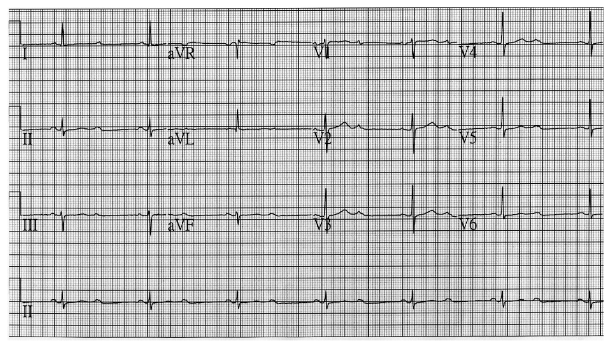
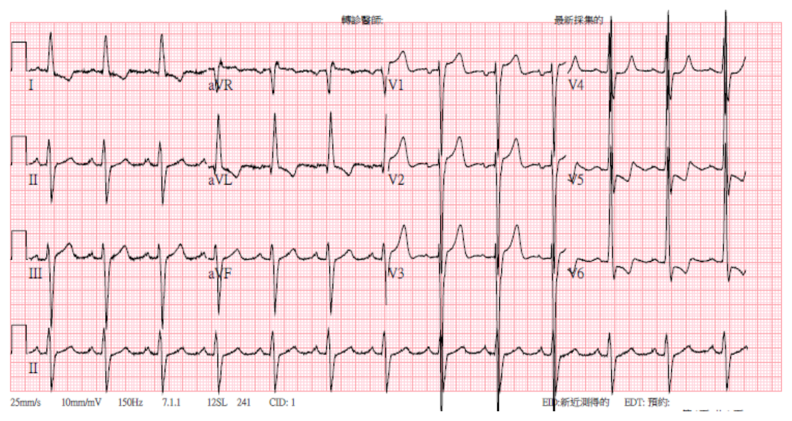
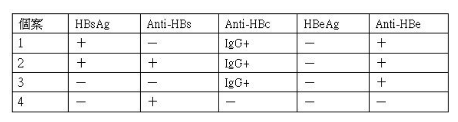
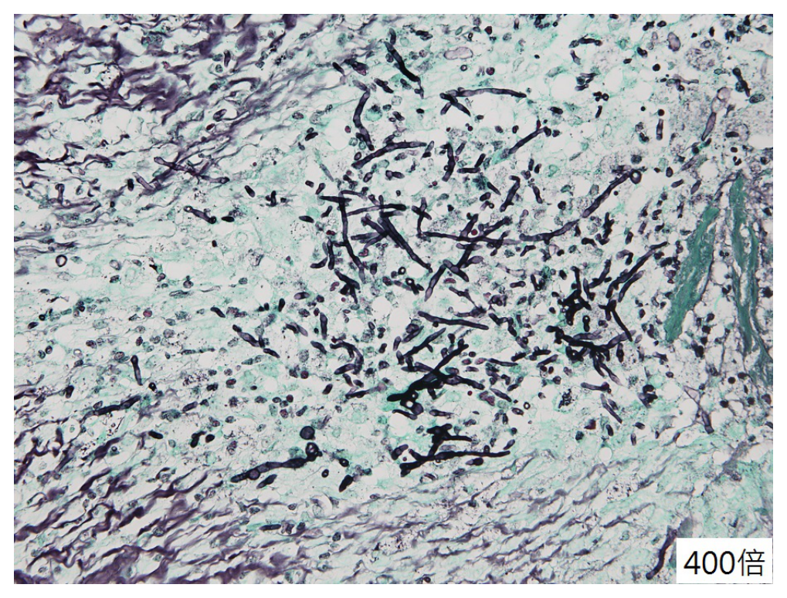
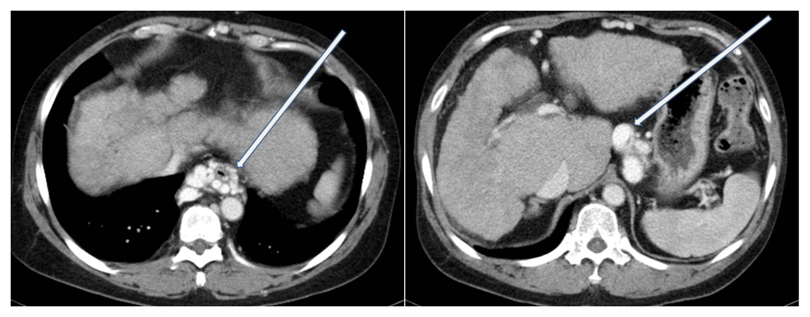

109 年第 2 次醫師醫學（三）（包括內科、家庭醫學科等科目及其相關臨床實例與醫學倫理）試題與答案
這一頁是民國 109 年第 2 次醫師醫學（三）（包括內科、家庭醫學科等科目及其相關臨床實例與醫學倫理）的整份歷屆試題，共 80 題，題目與標準答案出自考選部「國家考試試題及測驗式試題答案」開放資料，其中 80 題附有詳解。以下逐題列出題幹、選項與答案；要計時作答或記錄成績，請用線上練習。
考選部原始場次代碼：109080
線上作答這一科 →
全部 80 題
第 1 題
一位25歲男性，突然發現下肢無力、無法站立與走路、需家人攙扶，遂在隔天早上由家屬陪同就醫。實驗室檢查發現低血鉀（2.0 mEq/L）及低血磷（1.8 mg/dL），而血清肌酸酐（creatinine 0.6 mg/dL）、鈉（139mEq/L）、鈣（2.2 mmol/L）及血清滲透壓（serum osmolality 290 mOsm/kg）則在正常範圍。同時尿液中的鉀與滲透壓分別為10 mEq/L與580 mOsm/kg。下列敘述何者最適當？
- （A）TTKG（transtubular potassium gradient）計算後等於2.0
- （B）此病患低血鉀是因腎臟排出過多鉀離子
- （C）需加驗甲狀腺功能
- （D）經由周邊靜脈補鉀時，應將氯化鉀加在葡萄糖水裡，鉀離子濃度儘量不超過20～40 mmol/L
答案：（C）
詳解與考點
正解：嚴重低血鉀合併低血磷、尿鉀偏低，較支持鉀離子移入細胞而非腎臟大量流失；青年男性突發無力時應考慮甲狀腺毒性週期性麻痺（thyrotoxic periodic paralysis），故需加驗甲狀腺功能，選 C。
A：TTKG = 尿鉀 × 血清滲透壓 ÷ 血鉀 ÷ 尿滲透壓 = 10 × 290 ÷ 2.0 ÷ 580 = 2.5，不是 2.0。
B：低血鉀時若腎臟不當排鉀，尿鉀應偏高；本題尿鉀 10 mEq/L，較不支持腎性鉀流失。
D：以周邊靜脈補鉀時，不宜將氯化鉀加入葡萄糖水，因葡萄糖可刺激胰島素分泌而促使鉀離子進入細胞、使低血鉀惡化；（D）看似在描述周邊靜脈濃度限制，卻選錯輸液種類。
本題考點：低血鉀（hypokalemia）的腎性與非腎性鑑別；甲狀腺毒性週期性麻痺（thyrotoxic periodic paralysis）；跨細胞鉀轉移（transcellular potassium shift）。
第 2 題
疾病篩檢的原則應該包括下列那一項？
- （A）被篩檢出的疾病是可治療的
- （B）被篩檢的疾病其自然史是不清楚的
- （C）被篩檢的疾病對於健康沒有太大影響
- （D）篩檢方式具有高風險性
答案：（A）
詳解與考點
正解：篩檢的目的在於早期發現後可改善結果的疾病，因此被篩檢出的疾病必須有可接受且有效的治療或介入，故選 A。
B：篩檢對象的自然史應有足夠了解，才能判斷可偵測的前臨床期與介入時機；自然史不清楚反而不利篩檢。
C：篩檢通常優先針對重要健康問題；對健康影響很小的疾病，篩檢效益較難超過假陽性與後續處置負擔。
D：篩檢方法應安全、可接受且風險低，高風險性會削弱其作為族群篩檢工具的合理性。
本題考點：疾病篩檢原則（screening principles）；可治療疾病（treatable disease）；篩檢效益與傷害（benefits and harms of screening）。
第 3 題
基本日常生活的自我照顧能力（Basic Activities of Daily Living：Self-Care Tasks）之評估，不包括下列那一項？
- （A）個人衛生
- （B）穿衣脫衣
- （C）自行服藥
- （D）在床與椅子間移動
答案：（C）
詳解與考點
正解：基本日常生活活動（basic activities of daily living, BADL）評估的是基本自我照顧。自行服藥屬於較複雜的工具性日常生活活動（instrumental activities of daily living, IADL），不包括在 BADL，故選 C。
A：個人衛生如洗澡、梳洗與如廁，是基本自我照顧的一部分，屬 BADL。
B：穿衣脫衣反映基本自我照顧與功能獨立性，屬 BADL。
D：在床與椅子間移動是移位能力（transfer），屬 BADL 的核心評估項目。
本題考點：基本日常生活活動（basic activities of daily living, BADL）；工具性日常生活活動（instrumental activities of daily living, IADL）；功能性評估（functional assessment）。
第 4 題
一位病人的網狀細胞紅血球計數（reticulocyte count）為9%，血色素（hemoglobin）為7.5 gm/dL，血球比容值測定 （hematocrit）為23%，則其網狀細胞紅血球生產指數（reticulocyte production index）為何？
- （A）9.0
- （B）4.5
- （C）2.25
- （D）1.12
本題送分，無標準答案
詳解與考點
本題官方公告送分。
第 5 題
針對腹痛病人施行的身體檢查，下列敘述何者正確？
- （A）Grey Turner sign是指肚臍周圍有藍色瘀青，代表後腹腔出血
- （B）小腸阻塞初期，聽診常可發現低頻率、低活動性腸音（hypoactive bowel sounds）
- （C）右上腹觸診在吸氣與吐氣時，皆出現壓痛且停止呼吸，可記錄為Murphy sign陽性
- （D）執行Obturator sign檢查時，通常右側髖關節（hip）保持彎曲（flexion）；而施行Psoas sign時，膝關節則伸直
答案：（D）
詳解與考點
正解：腹部理學檢查操作。閉孔肌徵象（Obturator sign）通常讓右髖、右膝屈曲後，使髖部內旋以牽拉閉孔內肌；腰大肌徵象（Psoas sign）則使髖伸展，膝可保持伸直以伸展腰大肌，故選 D。
A：肚臍周圍藍色瘀青是 Cullen sign；Grey Turner sign 是側腹部瘀青，兩者皆可提示腹膜後出血，但部位不能混淆。
B：小腸阻塞初期常見高頻、亢進甚至金屬音樣腸音，病程後期才可能轉為低活動性腸音；（B）看似描述腸阻塞，卻把時期顛倒。
C：Murphy sign 陽性是右上腹壓迫下病人深吸氣時因疼痛突然停止吸氣，不是吸氣與吐氣都停止呼吸。
本題考點：腹部理學檢查（abdominal physical examination）；閉孔肌徵象（Obturator sign）與腰大肌徵象（Psoas sign）；Cullen sign 與 Grey Turner sign。
第 6 題
有關參與急性冠心症（acute coronary syndrome）之分子機制敘述，下列何者錯誤？
- （A）穩定的冠脈動脈硬化斑塊，受發炎細胞分泌之tumor necrosis factor、matrix metalloprotease等因子浸潤，會因膠原蛋白（collagen）之分解而趨於不穩定
- （B）當不穩定斑塊發生崩壞、血小板接觸到血管內膜下之蛋白質成分時，會發生活化並釋出其胞內之thromboxane、serotonin、fibrinogen等因子，造成局部血管收縮，並激活更多血小板
- （C）被激活之血小板會以其表面的glycoprotein IIb/IIIa receptor彼此直接連結，形成血小板團塊
- （D）被激活之血小板釋出之thrombin會將fibrinogen轉換為fibrin，進而形成更多血栓
答案：（C）
詳解與考點
正解：官方答案為 C。活化血小板並非以 glycoprotein IIb/IIIa receptor 彼此直接相連，而是由 fibrinogen 作為橋梁，連結相鄰血小板的 IIb/IIIa receptor 形成聚集。惟（D）將 thrombin 說成由血小板釋出，按字面亦不精確
A：發炎細胞與其分泌的介質可促進基質金屬蛋白酶（matrix metalloprotease）作用、降解纖維帽膠原蛋白，使原本穩定的動脈粥樣硬化斑塊轉為脆弱，敘述正確。
B：斑塊破裂後，血小板接觸內膜下結構會活化並釋放 thromboxane、serotonin 等物質，促進血管收縮及更多血小板活化；fibrinogen 是聚集橋梁而非典型顆粒釋放物，但此選項的整體致栓機轉正確，非本題最佳錯誤項。
D：thrombin 將 fibrinogen 轉換為 fibrin 的反應正確；但 thrombin 是由凝血級聯在活化血小板提供的促凝表面上生成，非由血小板直接釋出。因此（D）的來源敘述按字面也錯，構成本題的爭議。
本題考點：急性冠心症（acute coronary syndrome）的斑塊破裂；血小板聚集（platelet aggregation）與 glycoprotein IIb/IIIa；凝血酶（thrombin）與纖維蛋白（fibrin）形成。
第 7 題
有關非ST段上升心肌梗塞（NSTEMI）之敘述，下列何者錯誤？
- （A）急性非ST段上升心肌梗塞，係指患者臨床表現有不穩定心絞痛、心電圖未有明顯ST段上升、但心肌酶（cardiac enzyme）有升高者
- （B）各種心肌酶（cardiac enzyme）中，cardiac troponin的特異性及敏感度較高，出現升高的時間也比較早
- （C）非ST段上升心肌梗塞的心肌受損程度雖然比ST段上升心肌梗塞的少，但所有病人仍然應該在12小時內接受冠脈介入治療
- （D）對非ST段上升心肌梗塞病患的藥物治療中，應包括抗血小板藥物、抗凝血藥物、乙型交感神經阻斷劑（betablocker）、及硝酸甘油等
答案：（C）
詳解與考點
正解：NSTEMI 的侵入性治療時機需依缺血與臨床風險分層，並非所有人都在 12 小時內接受冠脈介入治療。高風險或持續缺血者可需較緊急處置，但低風險病人可採不同時程，故（C）錯誤。
A：不穩定心絞痛與 NSTEMI 同屬急性冠心症中無持續 ST 段上升的一群；若心肌標記上升，則支持 NSTEMI，敘述正確。
B：心肌鈣蛋白（cardiac troponin）具較高心肌特異性與敏感度，是診斷心肌壞死的重要心肌標記，敘述正確。
D：NSTEMI 的藥物治療通常包含抗血小板與抗凝血治療，並依血流動力與禁忌使用 β 阻斷劑與硝酸甘油等抗缺血藥物，敘述正確。
本題考點：非 ST 段上升心肌梗塞（NSTEMI）；風險分層（risk stratification）；早期侵入性策略（early invasive strategy）並非所有病人的固定時限。
第 8 題
一位76歲女性，最近稍微走路就會喘，到醫院檢查發現已患有高血壓和糖尿病，心電圖呈現心房顫動，但心室收縮功能正常且無瓣膜性心臟病，也無中風或其他心血管病史，評估病人使用抗凝血劑預防中風的CHA2DS2-VASc Score分數是多少？
- （A）4
- （B）5
- （C）6
- （D）7
本題送分，無標準答案
詳解與考點
本題經考選部公告一律給分。以年齡≥75（2分）、高血壓（1分）、糖尿病（1分）、女性（1分）計算應為5分，即(B)；惟病史「稍微走路就會喘」可解讀為心衰竭症狀，若計入C項（充血性心衰竭病史，1分）則總分應為6分，即(C)，兩種判讀因症狀是否構成心衰竭診斷而分歧，故送分。(A)4分未計入性別分或低估其他因子；(D)7分則重複計分，均可排除。作答以現行CHA2DS2-VASc評分標準為準。
第 9 題
一位69歲男性，過去無不適症狀，最近1個月開始有胸悶，容易疲倦無力，運動耐受力不佳，門診時血壓130/70 mmHg，心跳48次/分，呼吸16次/分，心電圖顯示如下圖，關於其心電圖的檢查結果，下列何者最正確？

- （A）有竇性心動過緩（sinus bradycardia）
- （B）有QTc間期延長（prolonged QTc）
- （C）有左心室肥厚（left ventricular hypertrophy）
- （D）有房室傳導阻滯（atrioventricular block）
答案：（D）
詳解與考點
正解：心電圖下方 II 導程節律帶可見規則的 P 波，但並非每個 P 波後都接續 QRS 波；約每兩個 P 波才有一個 QRS 波群，心室速率因而約為 48 次／分。這是房室傳導阻滯（atrioventricular block）的 2:1 傳導表現，能解釋其心搏過慢及運動耐受下降，故選 D。
A：表面上心室速率確實偏慢，但竇性心動過緩（sinus bradycardia）應是竇房結放電本身變慢，通常每個 P 波皆傳導至 QRS 波。本圖的 P 波頻率較 QRS 波頻率快，且有未傳導的 P 波，故心搏過慢的原因是房室傳導阻滯，而非單純竇性心動過緩。
B：QTc 間期延長須依 QT 間期配合心率校正後判讀；本圖的主要異常是規則 P 波中部分未產生後續 QRS 波，而非明顯 QT 延長，故不符。
C：左心室肥厚（left ventricular hypertrophy）通常依胸前導程的 QRS 電壓及相關復極變化判讀。本圖未見支持左心室肥厚的典型高電壓型態，且無法解釋規則 P 波與 QRS 波之間的 2:1 傳導關係。
本題考點：房室傳導阻滯（atrioventricular block）——P 波規則出現但部分未傳導至心室，形成 P 波數目多於 QRS 波；2:1 房室傳導可造成顯著心室心搏過緩與疲倦、運動耐受不佳；竇性心動過緩（sinus bradycardia）則應保有每個 P 波後均有 QRS 波的 1:1 房室傳導。
第 10 題
一位18歲男性無任何過去病史，因在跑馬拉松時暈厥被送至急診評估。根據同學描述，病人當時並無抽搐或眼睛上吊情形。且病患自述事發當時並無特別印象或記憶，但近日活動並沒有胸悶或活動性喘狀況。病患父親於50歲左右不明原因於登山過程中猝死。身體診察發現病人有收縮期心雜音。心電圖檢查如下。心臟超音波檢查顯示左心室壁肥厚且有心室內壓力梯度（intraventricular pressure gradient）。以下動作何者可造成病患心雜音更明顯？

- （A）用力握手（handgrip）
- （B）蹲下（squatting）
- （C）站起（standing）
- （D）抬腳（leg raising）
答案：（C）
詳解與考點
正解：年輕運動員運動中暈厥、家族猝死、收縮期心雜音，以及超音波顯示左心室壁肥厚合併心室內壓力梯度，符合肥厚型阻塞性心肌病變（hypertrophic obstructive cardiomyopathy, HOCM）。圖中心電圖可見左心室肥厚的高電位表現，亦支持此診斷。站起時靜脈回流減少，左心室舒張末期容積下降；較小的左心室腔使肥厚心室中隔與二尖瓣前葉更容易造成動態左心室流出道阻塞，因此壓力梯度及收縮期心雜音都更明顯，故選 C。
A：用力握手會增加周邊血管阻力與後負荷，使左心室射血阻力上升、動態流出道阻塞相對減輕；它可使二尖瓣逆流或主動脈瓣逆流雜音增加，但通常不會使 HOCM 的雜音增強。
B：蹲下會增加靜脈回流，且增加後負荷，使左心室腔容積變大、流出道阻塞減少，因此 HOCM 的收縮期雜音減弱。
D：抬腳會增加下肢靜脈血回流與前負荷，使左心室腔容積增加，降低二尖瓣前葉與肥厚中隔造成的動態阻塞，故心雜音會減弱而非加重。
本題考點：肥厚型阻塞性心肌病變（hypertrophic obstructive cardiomyopathy, HOCM）可造成運動中暈厥與猝死風險；其左心室流出道阻塞（left ventricular outflow tract obstruction）受前負荷影響，前負荷下降時如站立或 Valsalva maneuver，雜音增強；前負荷增加時如蹲下或抬腳，雜音減弱。
第 11 題
有關心音paradoxical splitting之敘述，下列何者正確？
- （A）係指二尖瓣的關閉時間提前所致
- （B）在嚴重主動脈瓣狹窄病人身上出現時，代表主動脈瓣關閉時間延後所致
- （C）常出現在心電圖紀錄有right bundle branch block的病人
- （D）常出現在肺高壓合併右心衰竭的病人
答案：（B）
詳解與考點
正解：paradoxical splitting 為主動脈瓣關閉音（A2）延遲，吸氣時兩個心音反而靠近。嚴重主動脈瓣狹窄使左心室射血時間延長，因而使 A2 延後，故選 B。
A：paradoxical splitting 不是二尖瓣關閉提前；第一心音的二尖瓣成分與第二心音分裂的 A2、P2 機轉不同。
C：右束支傳導阻滯（right bundle branch block）延遲右心室收縮與肺動脈瓣關閉（P2），造成寬分裂，吸氣時可更寬；它不是 A2 延遲所致的 paradoxical splitting。
D：肺高壓合併右心衰竭主要影響右心室射血與 P2，不能造成左側 A2 延遲的典型 paradoxical splitting。
本題考點：第二心音分裂（S2 splitting）；反常分裂（paradoxical splitting）；主動脈瓣狹窄（aortic stenosis）與左心室射血延遲。
第 12 題
有關下肢周邊血管疾病之敘述，下列何者錯誤？
- （A）一般而言，出現有皮膚溫度較涼、跛足、脈搏異常，表示疾病較為嚴重
- （B）若偵測到有血管雜音（vascular bruit），表示血管有分流（shunting）
- （C）當pulse oximetry在手指比腳趾有大於2%的氧飽合（oxygen saturation）差異時，可用以偵測本病之存在
- （D）血管雜音（vascular bruit）音量的大小和狹窄程度無關
答案：（B）
詳解與考點
正解：下肢周邊動脈疾病與血管雜音的意義。血管雜音是血流通過狹窄處產生的湍流，提示狹窄性病變，並不等同於動靜脈分流（shunting），故錯誤的是 B。
A：皮膚較涼、間歇性跛足與末梢脈搏減弱，皆反映下肢灌流不足；出現這些缺血徵象通常表示病變較具臨床重要性，敘述正確。
C：手指與腳趾的氧飽和度差異可作為末梢灌流異常的輔助線索；較低的趾端飽和度看似只是量測差異，卻可提示下肢動脈血流受限，敘述可成立。
D：雜音音量受血流量、狹窄程度及血管條件共同影響；嚴重狹窄若流量很低反而可能較安靜，因此音量不能單獨代表狹窄程度，敘述正確。
本題考點：周邊動脈疾病（peripheral arterial disease）以缺血症狀與脈搏異常評估；血管雜音（vascular bruit）代表湍流，不等於血管分流。
第 13 題
有關心臟雜音的敘述，下列何者正確？
- （A）主動脈狹窄的典型心雜音是早期收縮期心雜音，在S1之後，S2之前
- （B）左心室出口阻塞性肥厚型心肌病變患者，由蹲下姿態改變成站立時，心雜音會因而變小聲
- （C）發現有連續性的心雜音，應考慮的鑑別診斷包括：sinus of Valsalva破裂以及心房中膈缺損
- （D）僧帽瓣狹窄的心雜音，主要是舒張期的中段到末段雜音，病患左側躺時，在心尖部位會聽到低頻的心音
答案：（D）
詳解與考點
正解：僧帽瓣狹窄的典型聽診位置與時相。僧帽瓣狹窄使舒張期左心房至左心室的血流受阻，形成低頻的中晚期舒張期隆隆樣雜音；左側臥可使心尖部更接近胸壁，最易聽到，故選 D。
A：主動脈狹窄典型為漸強漸弱的射出性收縮期雜音，常在收縮期中段最響，不是早期收縮期雜音。
B：肥厚型阻塞性心肌病變由蹲下改站立時，靜脈回流與左心室容積下降，動態性出口阻塞加重，雜音會變大聲而非變小聲。
C：連續性雜音需考慮持續壓差的病變，例如動脈導管未閉或動靜脈瘻；心房中隔缺損主要造成固定分裂的 S2 與肺流量增加性收縮期雜音，並非典型連續性雜音。
本題考點：心雜音（cardiac murmur）須以時相、音質與聽診位置辨別；僧帽瓣狹窄（mitral stenosis）為心尖部低頻舒張期雜音。
第 14 題
有關收縮性心衰竭的治療，下列何者不宜？
- （A）利尿劑：包括aldosterone拮抗劑
- （B）鈣離子阻斷劑：特別是verapamil及diltiazem
- （C）RAAS抑制劑：包括angiotensin converting enzyme inhibitor以及angiotensin II receptor antagonist類的藥物
- （D）降心跳藥物：包括乙型阻斷劑以及ivabradine
答案：（B）
詳解與考點
正解：收縮性心衰竭（HFrEF）中會降低心肌收縮力的藥物。verapamil 與 diltiazem 為非二氫吡啶類鈣離子阻斷劑，具負性肌力作用，可能惡化收縮功能不全，故不宜的是 B。
A：利尿劑可改善鬱血症狀；醛固酮拮抗劑亦是適合病人的重要藥物類別，敘述可用於治療。
C：RAAS 抑制劑可減少不良心室重塑並改善預後，是收縮性心衰竭的核心治療之一。
D：具實證的乙型阻斷劑可改善預後；適當病人使用 ivabradine 降低竇性心律時的心率，亦可作為治療選項。
本題考點：射出分率降低心衰竭（heart failure with reduced ejection fraction, HFrEF）治療；非二氫吡啶類鈣離子阻斷劑（non-dihydropyridine calcium channel blockers）的負性肌力作用。
第 15 題
下列有關懷孕期間可能發生的肝臟疾病（liver disease of pregnancy）之敘述，何者錯誤？
- （A）AFLP（acute fatty liver of pregnancy）主要發生在妊娠第三期（3rd trimester），其肝臟病理主要呈現為microvesicular fat
- （B）HELLP（hemolysis, elevated liver enzymes, low platelets syndrome）發生時，立即生產是主要的治療方法
- （C）懷孕期間，肝臟常見功能的變化包括血清 alkaline phosphatase，AST及ALT上升
- （D）懷孕會增加肝臟腺瘤（adenoma）破裂出血的機會
答案：（C）
詳解與考點
正解：正常懷孕的肝功能生理變化。胎盤來源使 alkaline phosphatase 可上升，但 AST 與 ALT 在正常懷孕不應一併上升；若升高應評估肝膽疾病或妊娠相關肝病，故錯誤的是 C。
A：急性妊娠脂肪肝多見於第三孕期，病理可見肝細胞微小脂肪變性，敘述正確。
B：HELLP syndrome 病情嚴重時，終止妊娠是關鍵處置；看似只需保守改善檢驗值，但病因與胎盤相關，敘述方向正確。
D：懷孕的荷爾蒙環境可促進肝腺瘤生長並增加破裂出血風險，敘述正確。
本題考點：妊娠肝病（liver disease of pregnancy）；正常懷孕的 alkaline phosphatase 可升高，但 AST、ALT 不應視為生理性上升。
第 16 題
下列有關primary sclerosing cholangitis（PSC）及primary biliary cirrhosis（PBC）的敘述何者錯誤？
- （A）PSC常同時合併有ulcerative colitis（UC）
- （B）PBC患者有較高的風險得到cholangiocarcinoma
- （C）針對末期PBC患者，除了換肝手術外，UDCA（ursodeoxycholic acid）並無法有效改善PBC的存活率
- （D）PBC的患者，女性占大多數
答案：（B）
詳解與考點
正解：PSC 與 PBC 的惡性腫瘤風險差異。膽管癌（cholangiocarcinoma）的顯著風險主要與 PSC 相關，而非 PBC，故錯誤的是 B。
A：PSC 與潰瘍性結腸炎有強烈關聯，敘述正確。
C：UDCA 可用於 PBC 並改善部分病人的疾病進程，但末期 PBC 的根本治療是肝臟移植；此選項以末期情境表述，敘述可成立。
D：PBC 明顯以女性為主，敘述正確。
本題考點：原發性硬化性膽管炎（primary sclerosing cholangitis, PSC）與潰瘍性結腸炎、膽管癌相關；原發性膽汁性膽管炎（primary biliary cholangitis, PBC）常見於女性。
第 17 題
下列有關於化膿性肝膿瘍（pyogenic liver abscess）之敘述，何者錯誤？
- （A）由血流散布到肝臟引起的肝膿瘍，多為單一微生物感染，以Staphylococcus aureus及Streptococcal species最常見
- （B）原發性肝膿瘍（primary liver abscess）最常見為Escherichia coli所引起
- （C）糖尿病患發生Klebsiella pneumoniae肝膿瘍時，可能併發endophthalmitis
- （D）目前之標準處理方式為膿瘍引流（drainage）加上抗生素注射治療
本題送分，無標準答案
詳解與考點
本題官方公告送分。
第 18 題
有關解讀下表個案之B型肝炎血清標誌，何者敘述錯誤？

- （A）個案1可以是e抗原（HBeAg）陰性慢性B型肝炎或是急性B型肝炎感染的後期
- （B）個案2仍然屬於慢性B型肝炎帶原
- （C）個案3屬於過往的B型肝炎感染，目前不可能偵測到病毒存在
- （D）個案4可以是B型肝炎疫苗注射後或是假陽性
答案：（C）
詳解與考點
正解：圖中個案3為 HBsAg 陰性、Anti-HBs 陰性、Anti-HBc IgG 陽性且 Anti-HBe 陽性的「單獨 Anti-HBc 陽性」型態。這可代表過去感染後 Anti-HBs 已降至測不到，也可能是隱匿性 B 型肝炎感染（occult hepatitis B infection）；後者仍可能在血液或肝組織偵測到 HBV DNA。因此（C）稱目前不可能偵測到病毒存在，敘述過度絕對而錯誤。
A：圖中個案1 HBsAg 陽性、Anti-HBc IgG 陽性、HBeAg 陰性而 Anti-HBe 陽性，表示已有 B 型肝炎感染且 e 抗原已轉陰。這可見於 HBeAg 陰性慢性 B 型肝炎，也可見於急性感染後期，故非錯誤敘述。
B：圖中個案2 HBsAg 與 Anti-HBs 同時陽性，並有 Anti-HBc IgG 與 Anti-HBe，雖然 HBsAg 與 Anti-HBs 並存並非典型型態，但可發生於慢性 B 型肝炎感染者，例如不同病毒株感染或表面抗原變異時；不能因此排除慢性帶原，故非錯誤敘述。
D：圖中個案4僅 Anti-HBs 陽性，HBsAg、Anti-HBc、HBeAg 與 Anti-HBe 均陰性，符合接種 B 型肝炎疫苗後產生表面抗體的型態；也須考慮檢驗假陽性，故非錯誤敘述。
本題考點：B 型肝炎血清標誌（hepatitis B serology）——HBsAg 代表目前感染，Anti-HBc IgG 代表曾感染或持續感染；單獨 Anti-HBc 陽性（isolated anti-HBc positivity）須考慮隱匿性 B 型肝炎感染（occult hepatitis B infection），不可逕認為病毒絕不存在。
第 19 題
有關慢性B型肝炎治療的敘述，下列何者錯誤？
- （A）抗病毒藥物的potency（抑制B型肝炎病毒複製的能力）由高往低排序，依序為entecavir＞telbivudine＞tenofovir＞pegylated interferon
- （B）干擾素治療的優點為固定療程，無抗藥性，失代償性肝硬化也可使用
- （C）使用nucleotide analogues如tenofovir disoproxil fumarate要監控腎功能
- （D）肝硬化患者，且HBV DNA≧2,000 IU/mL，應該要給與抗病毒藥物治療
答案：（B）
詳解與考點
正解：官方答案為 B；惟（A）所列抗病毒 potency 排序亦與臨床上常用的高效藥物比較不一致，題目存在多個可爭議點。就（B）而言，干擾素雖有固定療程且不產生病毒抗藥性，但失代償性肝硬化病人可能因不良反應而惡化，通常不適用。
A：此選項將 entecavir、tenofovir 與 telbivudine 的抑制力排序為固定高低，與一般對高效核苷（酸）類似物的比較不符；這是本題與官方答案不完全相符的具體爭點。
C：tenofovir disoproxil fumarate 可能影響腎功能，治療期間監測腎功能是合理作法。
D：肝硬化合併可測得的 HBV DNA 時，抗病毒治療可降低疾病進展風險，敘述方向正確。
本題考點：慢性 B 型肝炎（chronic hepatitis B）抗病毒治療；干擾素（interferon）不適用於失代償性肝硬化；tenofovir 的腎功能監測。本題藥物效力排序有爭議
第 20 題
對於肝性腦病變（俗稱肝昏迷）（hepatic encephalopathy）的敘述，何者正確？
- （A）病人血液中的氨（ammonia）值通常會升高，而且氨值的高低與肝性腦病變的嚴重度成正比
- （B）誘發因素很多，例如感染及低血鉀
- （C）必須嚴格的限制蛋白質的攝取
- （D）可以使用軟便劑如氧化鎂（MgO）來治療
答案：（B）
詳解與考點
正解：肝性腦病變常見的可逆誘發因素。感染可增加分解代謝與氨負荷，低血鉀會促進腎臟產氨並加重鹼中毒傾向，兩者皆可誘發或惡化肝性腦病變，故選 B。
A：血氨常升高，但濃度與臨床嚴重度並非線性成正比；看似符合氨的致病角色，卻不能用單一數值分級病情。
C：不宜嚴格限制蛋白質，應避免營養不良並以適當蛋白質攝取維持肌肉量。
D：治療重點是降低腸道產氨與促進排便，常用可調整排便頻率的藥物；氧化鎂不是肝性腦病變的標準治療核心。
本題考點：肝性腦病變（hepatic encephalopathy）的誘發因素；血氨（ammonia）與臨床嚴重度不完全平行；營養支持與腸道降氨治療。
第 21 題
關於發炎性腸道疾病（inflammatory bowel disease, IBD）的治療，何者正確？①類固醇在remission induction與maintenance therapy都扮演很重要角色 ②生物製劑（biologics）可以降低使用類固醇的機會，讓發炎性腸道疾病的治療進入新紀元 ③生物製劑（biologics）可以增進瘻管（fistula）癒合，降低需手術或引流的機會④5-ASA藥物為潰瘍性大腸炎重要的維持治療藥物
- （A）僅①②③
- （B）僅②③④
- （C）僅②④
- （D）①②③④
答案：（B）
詳解與考點
正解：IBD 各藥物在誘導緩解與維持治療的角色。②生物製劑可減少類固醇暴露，③可促進部分瘻管癒合並減少介入需求，④5-ASA 是潰瘍性結腸炎的重要維持藥物；①錯在把類固醇列為維持治療，因此正確組合為僅②③④，選 B。
A：包含①即錯，因類固醇適合誘導緩解，長期維持會帶來累積不良反應，不是重要的維持策略。
C：漏掉③。生物製劑對瘻管型疾病可有療效，不能因其非所有病人皆適用而否定此敘述。
D：包含①，故整組不正確。
本題考點：發炎性腸道疾病（inflammatory bowel disease, IBD）的誘導緩解與維持治療；類固醇（corticosteroids）不作長期維持；生物製劑（biologics）與 5-ASA 的角色。
第 22 題
下列關於大腸激躁症（irritable bowel syndrome）的敘述，何者正確？
- （A）主要為腸道壁的異常所致，與中樞神經較無關連性
- （B）急性感染性腸炎後發生的大腸激躁症，以男生多於女生
- （C）患者以45歲以上者居多
- （D）嚴重大腸激躁症以女性居多，約占80%
答案：（D）
詳解與考點
正解：大腸激躁症的流行病學特徵。嚴重大腸激躁症以女性較多，約可占 80%，故選 D。
A：大腸激躁症是腸腦互動失調（disorder of gut-brain interaction），涉及腸道感覺、動力、心理與中樞調控，不能說與中樞神經無關。
B：感染後大腸激躁症較常見於女性，選項將性別方向顛倒。
C：大腸激躁症多在較年輕成人出現，並非以 45 歲以上為主；較晚新發症狀反而要注意其他器質性疾病。
本題考點：大腸激躁症（irritable bowel syndrome, IBS）是腸腦互動失調；女性較常見，感染後 IBS 亦有女性優勢。
第 23 題
關於可遺傳性胃腸道息肉增生症候群（hereditable gastrointestinal polyposis syndromes），下列敘述何者正確？
- （A）familial adenomatous polyposis其大腸息肉組織型態為腺瘤（adenoma），腺瘤常具有癌化可能，此症候也常伴隨各種先天性異常（congenital abnormalities）
- （B）Peutz-Jeghers syndrome其息肉組織型態為腺瘤（adenoma），腺瘤常具有癌化可能，此病症息肉可能發生在大小腸及胃部
- （C）Turcot's syndrome其大腸息肉組織型態為腺瘤（adenoma），腺瘤常具有癌化可能，也常伴隨發生骨瘤（osteomas）、纖維瘤（fibroma）、脂肪瘤（lipoma）、表皮樣囊腫（epidermoid cysts）、壺腹癌（ampullary cancers）、先天性視網膜色素上皮肥大（congenital hypertrophy of retinal pigment epithelium）
- （D）nonpolyposis syndrome （Lynch's syndrome）其大腸息肉組織型態為腺瘤（adenoma），腺瘤常發生於近端大腸（proximal colon），息肉具有癌化可能，此病症可能伴隨有子宮內膜及卵巢腫瘤（endometrial and ovariantumors），雖然發生率較少，但是也有可能發生胃癌（gastric cancer）、泌尿生殖癌（genitourinarycancers）、胰臟癌（pancreatic cancer）、膽道癌（biliary cancer）
答案：（D）
詳解與考點
正解：Lynch syndrome 的腫瘤譜。Lynch syndrome 的腺瘤與大腸癌常偏近端，並增加子宮內膜、卵巢及若干胃腸、泌尿生殖與膽胰系統癌症風險，故選 D。
A：FAP 的確有大量腺瘤與癌化風險，但選項以「各種先天性異常」概括並非其標準核心描述。
B：Peutz-Jeghers syndrome 的息肉是錯構瘤（hamartomatous polyp），不是腺瘤；看似也會有癌症風險，錯在息肉組織型態。
C：選項所列骨瘤、表皮樣囊腫與視網膜色素上皮肥大較符合 Gardner syndrome 的相關表現，不是 Turcot syndrome 的典型組合。
本題考點：Lynch syndrome（hereditary nonpolyposis colorectal cancer）的近端大腸癌與腸外癌風險；Peutz-Jeghers syndrome 的錯構瘤息肉；FAP 相關症候群的辨別。
第 24 題
55歲女性病人，因慢性腎絲球腎炎導致末期腎病，5年前接受親屬捐贈活體腎移植，長期接受tacrolimus、mycophenolate mofetil治療，一個月前血中肌酸酐0.8 mg/dL，3天前噁心、嘔吐，肌酸酐升至3.3 mg/dL，腎切片檢查呈現腎小球、腎小管有C4d沉積，內皮細胞損傷，目前最佳治療方式是：
- （A）增加tacrolimus和mycophenolate mofetil劑量
- （B）類固醇脈衝治療（methylprednisolone pulse therapy）
- （C）降低tacrolimus劑量加血液透析
- （D）血漿置換術加免疫球蛋白注射
答案：（D）
詳解與考點
正解：移植腎功能急遽惡化合併 C4d 沉積與內皮損傷，指向抗體媒介排斥（antibody-mediated rejection）。血漿置換可移除循環抗體，合併靜脈免疫球蛋白調節免疫反應，是本題最佳治療，故選 D。
A：單純增加 tacrolimus 與 mycophenolate mofetil 主要針對細胞媒介免疫抑制，無法充分處理已形成的循環抗體。
B：類固醇脈衝較常作為急性細胞媒介排斥的初步治療；本題 C4d 沉積使抗體媒介機轉更具關鍵性。
C：降低 tacrolimus 與透析只能處理部分藥物毒性或腎衰竭後果，不能處理抗體媒介的移植物損傷。
本題考點：抗體媒介排斥（antibody-mediated rejection）；C4d 沉積是移植腎抗體媒介傷害的重要線索；血漿置換（plasmapheresis）與靜脈免疫球蛋白（IVIG）。
第 25 題
23歲女性病人，於上呼吸道感染後3天發現血尿，尿液檢查發現有血尿、蛋白尿，腎切片檢查發現腎小球膜基質（mesangium）有免疫球蛋白沉澱，此病人最可能之診斷為：
- （A）微小變化腎病變（minimal change disease）
- （B）A型免疫球蛋白腎病變（IgA nephropathy）
- （C）局部腎硬化（focal glomerulosclerosis）
- （D）膜性腎病變（membranous nephropathy）
答案：（B）
詳解與考點
正解：上呼吸道感染後數日即出現肉眼血尿，加上腎小球系膜免疫球蛋白沉積。此為 IgA nephropathy 的典型「同步性血尿」表現，故選 B。
A：微小變化腎病變主要表現為腎病症候群與大量蛋白尿，電子顯微鏡見足細胞突起融合，非系膜免疫沉積。
C：局部節段性腎絲球硬化亦常以蛋白尿或腎病症候群表現，病理重點是節段性硬化，不符合本題感染後即發血尿的組合。
D：膜性腎病變以腎病症候群與腎小球基底膜上皮下沉積為主，不是系膜 IgA 沉積。
本題考點：A 型免疫球蛋白腎病變（IgA nephropathy）常在上呼吸道感染後同期出現血尿；系膜區（mesangium）IgA 沉積為病理特徵。
第 26 題
下列抗體和疾病之間的致病機轉組合，何者錯誤？
- （A）anti-proteinase-3 antibodies and granulomatosis with polyangiitis
- （B）anti-hyaluronidase antibodies and poststreptococcal glomerulonephritis
- （C）anti-phospholipase A2 receptor antibodies and primary membranous glomerulonephritis
- （D）anti-α5 NC1 domain of collagen IV antibodies and Goodpasture syndrome
答案：（D）
詳解與考點
正解：官方答案為 D。Goodpasture syndrome 的自體抗體主要針對第四型膠原蛋白 α3 鏈的 NC1 區域，而不是 α5 NC1 domain。惟（B）把鏈球菌感染證據當成致病抗體，也有實質爭議
A：PR3-ANCA 與 granulomatosis with polyangiitis 密切相關，敘述正確。
B：anti-hyaluronidase antibody 主要作為先前鏈球菌感染的血清學證據；感染後腎絲球腎炎的致病機轉涉及 nephritogenic streptococcal antigens、免疫複合體與補體活化，不能直接將此抗體視為致病配對。因此（B）按題幹所問也有爭議。
C：anti-PLA2R antibody 是原發性膜性腎病變的重要致病與診斷線索，敘述正確。
本題考點：Goodpasture syndrome 的 anti-GBM antibody 靶向 collagen IV α3 NC1 domain；PR3-ANCA 與 granulomatosis with polyangiitis；anti-PLA2R 與原發性膜性腎病變。
第 27 題
某70歲女性患者近2週嘔吐、腹痛漸增而至急診；過去病史：糖尿病10多年，一個月前腎功能正常，目前使用之藥物包括metformin 1.5 g daily，losartan 50 mg daily，以及simvastatin 20 mg daily。實驗室檢查發現：Na+139 mmol/L，K+ 4.9 mmol/L，Cl- 103 mmol/L，glucose 216 mg/dL，cholesterol 220 mg/dL，Ca2+ 8 mg/dL，Cr6.5 mg/dL；動脈血氣體pH 7.0，HCO3- 4.0 mEq/L，PCO2 14 mmHg，尿液無異常。下列何者為最可能之診斷？
- （A）diabetic ketoacidosis
- （B）rhabdomyolysis
- （C）lactic acidosis
- （D）type 4 renal tubular acidosis
答案：（C）
詳解與考點
正解：metformin 使用者發生嚴重急性腎損傷與高陰離子間隙代謝性酸中毒。陰離子間隙＝Na+－（Cl-＋HCO3-）＝139－（103+4）＝32 mEq/L，明顯升高；腎功能惡化會使 metformin 累積，最符合 lactic acidosis，故選 C。
A：糖尿病酮酸中毒也可造成高陰離子間隙酸中毒，但血糖 216 mg/dL 並不支持典型 DKA，且題幹有 metformin 累積的強烈線索。
B：橫紋肌溶解常有肌痛、深色尿或尿液血紅素陽性等線索；題示尿液無異常，支持度較低。
D：第 4 型腎小管性酸中毒通常為高血鉀性、正常陰離子間隙代謝性酸中毒，與本題陰離子間隙 32 mEq/L 不符。
本題考點：高陰離子間隙代謝性酸中毒（high anion gap metabolic acidosis）的計算；metformin-associated lactic acidosis；急性腎損傷（acute kidney injury）。
第 28 題
下列有關急性腎損傷（acute kidney injury）的敘述，何者錯誤？
- （A）腎前性（prerenal）急性腎損傷之血清尿素氮（BUN）與肌酸酐（creatinine）比值常大於20
- （B）敗血症為造成腎因性（intrinsic）急性腎損傷常見原因之一
- （C）泌尿道阻塞造成之腎後性（postrenal）急性腎損傷，解決阻塞為最首要的治療方式
- （D）慢性腎臟病患併發急性腎損傷，若尿鈉排出分率（fractional excretion of sodium, FeNa）大於1%，則可排除腎前性（prerenal）急性腎損傷
答案：（D）
詳解與考點
正解：慢性腎臟病合併急性腎損傷時 FeNa 的侷限。慢性腎病、利尿劑使用與混合性病因都可改變鈉排出，FeNa 大於 1% 不能單獨排除腎前性 AKI，故錯誤的是 D。
A：腎前性 AKI 因尿素再吸收增加，BUN/creatinine 比值常大於 20，敘述正確。
B：敗血症可經血流動力改變、發炎與腎小管傷害造成腎實質性 AKI，敘述正確。
C：腎後性 AKI 的首要處置是辨識並解除阻塞，敘述正確。
本題考點：急性腎損傷（acute kidney injury）的腎前性、腎性與腎後性分類；尿鈉排出分率（fractional excretion of sodium, FeNa）在慢性腎病的診斷限制。
第 29 題
下列有關腎移植抗排斥藥物與其副作用之配對，何者錯誤？
- （A）類固醇（glucocorticoid）：骨質疏鬆
- （B）環孢靈（cyclosporine）：腎毒性
- （C）普樂可復（tacrolimus）：移植後糖尿病
- （D）斥消靈（sirolimus）：高尿酸血症
答案：（D）
詳解與考點
正解：sirolimus 的典型不良反應。sirolimus 常見高血脂、骨髓抑制、口腔潰瘍與傷口癒合不良等，高尿酸血症並非其典型配對，故錯誤的是 D。
A：長期 glucocorticoid 會增加骨質疏鬆風險，敘述正確。
B：cyclosporine 的腎毒性是重要限制，敘述正確。
C：tacrolimus 可造成新發糖尿病或加重高血糖，敘述正確。
本題考點：腎移植免疫抑制劑（immunosuppressants）的毒性；calcineurin inhibitors 的腎毒性與糖尿病；mTOR inhibitor sirolimus 的代謝及傷口癒合不良反應。
第 30 題
有關尿毒性出血（uremic bleeding）的敘述，下列何者錯誤？
- （A）尿毒性出血常導因於血小板凝集功能不良
- （B）若尿毒性出血病患合併貧血，輸血也有助於凝血
- （C）可輸注desmopressin、cryoprecipitate來治療尿毒性出血
- （D）若持續出血，可考慮給與androgen幫助止血，但須注意可能有血栓栓塞（thromboembolism）的風險
答案：（D）
詳解與考點
正解：尿毒性出血的主要機轉與止血措施。尿毒性出血主要為血小板功能障礙，處置可包括透析、矯正貧血及短期改善血小板功能的措施；androgen 並非持續出血時的標準止血治療，故錯誤的是 D。
A：尿毒素會影響血小板黏附與凝集，造成出血傾向，敘述正確。
B：合併貧血時改善血比容可增進血小板與血管壁的交互作用，有助止血，敘述正確。
C：desmopressin 可短暫改善尿毒性血小板功能，cryoprecipitate 亦可在特定情況作為輔助，敘述正確。
本題考點：尿毒性出血（uremic bleeding）主要是血小板功能障礙；desmopressin 與矯正貧血可作為止血輔助；透析可改善尿毒症狀。
第 31 題
關於sarcoidosis的臨床表現與診斷治療之敘述，下列何者正確？
- （A）sarcoidosis是一種會產生granuloma的發炎性免疫疾病，過度的CD4 T淋巴細胞活化為主要致病機轉
- （B）sarcoidosis最少侵犯肺部，也很少造成肺動脈高壓（pulmonary artery hypertension）
- （C）病人因血中的angiotensin-converting enzyme（ACE）上升而造成hypercalcemia
- （D）目前最有效的生物製劑是IL-1 inhibitor
答案：（A）
詳解與考點
正解：sarcoidosis 的肉芽腫性免疫機轉。sarcoidosis 是以非乾酪性肉芽腫為特徵的發炎性免疫疾病，CD4 T 細胞活化與巨噬細胞驅動的免疫反應具有核心作用，故選 A。
B：肺部是 sarcoidosis 最常受侵犯器官，慢性肺病變亦可能導致肺高壓，選項方向相反。
C：高血鈣主要來自肉芽腫巨噬細胞增加活性維生素 D 生成，不是血中 ACE 上升直接造成。
D：sarcoidosis 的治療依器官受累與嚴重度而定，類固醇是常用治療；IL-1 inhibitor 並非目前最有效的標準生物製劑。
本題考點：結節病（sarcoidosis）的非乾酪性肉芽腫（noncaseating granuloma）；CD4 T 細胞免疫反應；高血鈣與活性維生素 D 生成。
第 32 題
某些自體免疫抗體與自體免疫疾病有相關性，因此測血中的自體免疫抗體有助於自體免疫疾病的診斷，下列的自體免疫疾病與自體免疫抗體之配對何者錯誤？
- （A）Sjögren's syndrome－anti-Ro（SS-A）antibody
- （B）systemic lupus erythematosus（SLE）－anti-ds DNA antibody
- （C）mixed connective tissue disease（MCTD）－anti-centromere antibody
- （D）diffuse systemic sclerosis－anti-Scl-70 antibody
答案：（C）
詳解與考點
正解：各結締組織疾病的代表性自體抗體。MCTD 最具代表性的抗體是 anti-U1 RNP，而 anti-centromere antibody 較與 limited cutaneous systemic sclerosis 相關，故錯誤的是 C。
A：anti-Ro（SS-A）antibody 與 Sjögren syndrome 密切相關，敘述正確。
B：anti-dsDNA antibody 與 SLE 高度特異，並可與腎炎活動度相關，敘述正確。
D：anti-Scl-70 antibody 為 anti-topoisomerase I，與 diffuse systemic sclerosis 相關，敘述正確。
本題考點：混合性結締組織病（mixed connective tissue disease, MCTD）與 anti-U1 RNP；anti-centromere antibody 與 limited systemic sclerosis；anti-Scl-70 antibody 與 diffuse systemic sclerosis。
第 33 題
下列何者是風濕熱（rheumatic fever）最有可能的病理機轉（pathogenesis）？
- （A）鏈球菌抗原（streptococcal antigens）的分子模仿（molecular mimicry）免疫反應
- （B）金黃色葡萄球菌（Staphylococcus aureus）感染引起
- （C）癌細胞侵襲（cancer cell invasion）引起
- （D）類風濕性關節炎（rheumatoid arthritis）引起
答案：（A）
詳解與考點
正解：風濕熱的關鍵是先前 A 群鏈球菌感染後出現的延遲性全身發炎，而非細菌直接侵入心臟或關節。鏈球菌抗原與人體心臟、關節等組織的抗原具有相似性，免疫反應因分子模仿（molecular mimicry）而交叉攻擊宿主組織，故選 A。
B：金黃色葡萄球菌可造成化膿性感染或感染性心內膜炎，但不是風濕熱的致病觸發菌；本題最容易混淆處在兩者都可影響心臟，然而風濕熱是鏈球菌感染後的交叉免疫反應。
C：癌細胞侵襲是惡性腫瘤的局部擴散機轉，無法解釋風濕熱的感染後免疫性多器官表現。
D：類風濕性關節炎本身是另一種自體免疫疾病，並不會引起風濕熱；兩者均可有關節炎，病因與病程不同。
本題考點：急性風濕熱（acute rheumatic fever）是 A 群鏈球菌感染後的免疫併發症；分子模仿（molecular mimicry）造成抗體與 T 細胞對宿主組織交叉反應；須與細菌直接感染（direct infection）區分。
第 34 題
有關僵直性脊椎炎（ankylosing spondylitis）的治療，下列何者正確？
- （A）sulfasalazine對脊椎發炎比較有效
- （B）生物製劑抗腫瘤壞死因子（anti-TNF）只對周邊關節炎有效，對於脊椎發炎沒有明顯幫助
- （C）非類固醇類消炎止痛藥（nonsteroidal anti-inflammatory drugs, NSAIDs）是第一線藥物
- （D）methotrexate對於輔助anti-TNF治療僵直性脊椎炎很重要，最好每個病人都要併用
答案：（C）
詳解與考點
正解：僵直性脊椎炎以中軸脊椎與薦腸關節發炎為核心，治療先要兼顧疼痛、發炎與活動功能。非類固醇類消炎止痛藥（nonsteroidal anti-inflammatory drugs, NSAIDs）可改善中軸症狀，是藥物治療的第一線選擇，故選 C。
A：sulfasalazine 對周邊關節炎可能有幫助，但對脊椎等中軸發炎效果有限；看似也是抗風濕藥，錯在把周邊關節效果套用到中軸疾病。
B：抗腫瘤壞死因子藥物（anti-TNF）可用於 NSAIDs 效果不足的活動性中軸脊椎關節炎，並非只對周邊關節炎有效。
D：methotrexate 對純中軸病變的療效有限，並非每位使用 anti-TNF 的病人都必須合併使用。
本題考點：僵直性脊椎炎（ankylosing spondylitis）屬中軸脊椎關節炎（axial spondyloarthritis）；NSAIDs 是中軸症狀的第一線藥物；傳統疾病修飾抗風濕藥（conventional DMARDs）較偏向周邊關節病變。
第 35 題
65歲謝女士因爲全身酸痛多年到門診求診。主訴睡眠不佳、注意力不能集中，已經看了10位以上的不同專科醫師，做過腦部電腦斷層、肌電圖及血液檢查，都沒有確切診斷，只知道以前的醫生告知她所有檢查都是正常。若懷疑病人是纖維肌痛症（fibromyalgia），則下列何項處置對確立診斷最為適當？
- （A）問卷評估疼痛區及全身症狀
- （B）安排頸椎核磁共振
- （C）再檢驗一次血中類風濕因子（rheumatoid factor）
- （D）女性荷爾蒙檢查
答案：（A）
詳解與考點
正解：慢性廣泛疼痛合併睡眠不佳、注意力困難，且既有檢查未顯示其他病因，是纖維肌痛症（fibromyalgia）的典型線索。診斷以疼痛分布與症狀嚴重度的結構化問卷評估為主，並配合病史與理學檢查排除替代診斷，故選 A。
B：頸椎核磁共振僅在有局部神經學異常或懷疑結構病變時才有針對性；本題是廣泛疼痛與系統性症狀，並無此線索。
C：類風濕因子不是纖維肌痛症的確立診斷工具，且反覆檢驗正常的血液指標不能取代症狀型態評估。
D：女性荷爾蒙檢查無法用來確立纖維肌痛症；年齡與性別雖可能影響症狀感受，卻不是其診斷依據。
本題考點：纖維肌痛症（fibromyalgia）以慢性廣泛疼痛及睡眠、疲勞、認知症狀辨識；廣泛疼痛指數（widespread pain index）與症狀嚴重度（symptom severity）支持臨床診斷；檢查重點是排除有線索的替代疾病。
第 36 題
某50歲男性為一慢性B型肝炎患者，在超音波檢查中發現有一個2公分的肝腫瘤，醫師懷疑為肝細胞癌（hepatocellular carcinoma, HCC）。以下的血液檢查報告，何者不代表該病患已有肝硬化（liver cirrhosis）的現象？
- （A）血小板數＝70,000/μL
- （B）albumin＝2.8 g/dL
- （C）INR（international normalized ratio）＞2.2
- （D）AST＝100 U/L
答案：（D）
詳解與考點
正解：題目要找「不代表肝硬化」的檢驗。肝硬化會因門脈高壓、肝臟合成功能下降而出現血小板低下、白蛋白降低與凝血功能變差；AST 上升只表示肝細胞受損，不能單獨代表已形成肝硬化，故選 D。
A：血小板 70,000/μL 明顯低下，常見於肝硬化造成的門脈高壓與脾臟滯留，支持進展性慢性肝病。
B：albumin 2.8 g/dL 反映肝臟蛋白質合成能力下降，是肝硬化失代償或肝功能不良的重要線索。
C：INR 大於 2.2 表示凝血因子合成不足，支持肝臟合成功能顯著受損；雖也須考慮其他原因，但比單純 AST 上升更能反映肝硬化相關功能障礙。
本題考點：肝硬化（liver cirrhosis）的功能評估包括白蛋白（albumin）與凝血功能（INR）；門脈高壓（portal hypertension）常造成血小板低下；轉胺酶（aminotransferase）上升反映肝細胞損傷而非纖維化分期。
第 37 題
Localized non-metastatic resectable的pancreatic ductal adenocarcinoma，應考慮的治療為「外科切除」。以下敘述中，何者正確？
- （A）大多數（約60%）初診斷的胰臟癌，皆屬於localized non-metastatic resectable disease
- （B）經過手術切除後，大多數病患預後良好，5年整體存活率大約為60%
- （C）手術病理檢驗發現約有30%病患仍有microscopic residual disease（即為R1 resection）
- （D）手術後的輔助性化學治療對病患的整體存活期並無助益，不應進行
答案：（C）
詳解與考點
正解：可切除的胰管腺癌即使完成外科切除，仍常因局部顯微鏡殘存腫瘤而影響預後。R1 resection 指切緣仍可見顯微鏡腫瘤殘留；約有 30% 病人可有此情形，故選 C。
A：初診胰臟癌多數並非局限且可切除，常已屬局部進展或轉移，因此不能把約 60% 都視為可直接根治切除。
B：胰管腺癌即使可切除，整體復發風險仍高，術後 5 年整體存活率並非 60%；看似因「早期可切除」而預後較佳，卻高估了此癌種的侵襲性。
D：術後輔助性化學治療可改善可切除胰管腺癌的預後，不能因已手術就認為沒有存活效益。
本題考點：胰管腺癌（pancreatic ductal adenocarcinoma）的可切除性（resectability）決定初始治療策略；R1 resection 是顯微鏡陽性切緣；輔助性化學治療（adjuvant chemotherapy）用於降低術後復發風險。
第 38 題
下列何者不是第四期腎細胞癌有效的治療？
- （A）免疫檢查站（checkpoint）抑制劑
- （B）化學治療（chemotherapy）
- （C）抗血管新生標靶治療
- （D）mTOR抑制劑標靶治療
答案：（B）
詳解與考點
正解：第四期腎細胞癌的全身治療以免疫治療與針對血管新生或訊息傳遞路徑的標靶治療為主。傳統細胞毒性化學治療對腎細胞癌的療效有限，並非其典型有效治療，故選 B。
A：免疫檢查站抑制劑（checkpoint inhibitor）可恢復抗腫瘤 T 細胞反應，是晚期腎細胞癌的重要治療類別。
C：抗血管新生標靶治療可抑制腫瘤相關血管生成，腎細胞癌常可從此類治療獲益。
D：mTOR 抑制劑屬晚期腎細胞癌可考慮的標靶治療類別，作用於腫瘤細胞生長與代謝訊號。
本題考點：轉移性腎細胞癌（metastatic renal cell carcinoma）常用免疫治療（immunotherapy）與標靶治療（targeted therapy）；血管新生（angiogenesis）及 mTOR 訊號是重要治療標的；傳統化學治療敏感性低。
第 39 題
一位67歲男性，因為倦怠無力，臉色蒼白泛黃而到門診求醫。理學檢查發現結膜蒼白，鞏膜泛黃，舌頭平滑發炎且無突起。其餘身體檢查並無特殊之處。血液數據顯示，白血球2,950/μL，分類無明顯異常，血紅素6.0g/dL，MCV（mean corpuscular volume）120.4 fL，血小板84,000/μL，總膽紅素輕微升高3.23 mg/dL，直接膽紅素0.25 mg/dL，lactate dehydrogenase（LDH）高達1030 U/L（參考區間140～271）。病人並未接受過任何胃腸道的手術，但是有atrophic gastritis，且anti-parietal cell antibody 呈陽性反應。以下關於這位病人最可能的疾病之描述，何者錯誤？
- （A）此類病人的血液中的reticulocyte counts常是降低的
- （B）此類病人的骨髓中的erythroid precursors的數量常是降低的
- （C）此類病人的高LDH數值主要是因為ineffective erythropoiesis與intramedullary hemolysis而造成
- （D）此類病人的血液中的granulocytes常有hypersegmented nuclei
答案：（B）
詳解與考點
正解：大球性貧血、全血球低下、舌炎、間接膽紅素與 LDH 上升，加上萎縮性胃炎及抗壁細胞抗體陽性，最符合惡性貧血造成的維生素 B12 缺乏。此病的無效造血使骨髓內紅系前驅細胞通常增生而非減少，故錯誤敘述為 B。
A：無效紅血球生成使成熟紅血球產出不足，周邊網狀紅血球計數常偏低，與嚴重貧血不相稱。
C：紅系細胞在骨髓內過早破壞會造成無效造血與骨髓內溶血（intramedullary hemolysis），可使 LDH 顯著升高。
D：維生素 B12 缺乏導致 DNA 合成障礙，粒細胞可出現過度分葉核（hypersegmented nuclei），是巨幼紅血球性貧血的典型抹片線索。
本題考點：惡性貧血（pernicious anemia）由自體免疫性萎縮性胃炎導致維生素 B12 缺乏；巨幼紅血球性貧血（megaloblastic anemia）有無效造血與高 LDH；骨髓紅系前驅細胞常呈增生。
第 40 題
一位75歲女性，5年前因為風濕性心臟病而裝置金屬心臟瓣膜，長期服用warfarin以防止血栓。某日例行性的門診發現INR（international normalized ratio）是5.4，但是臨床上並無出血的現象。以下關於此藥物與這位病人的處置，何者錯誤？
- （A）warfarin之抗凝血效果通常不會在服藥後立刻出現，因此需要在開始治療時，同時使用約5天的其他抗凝血藥物，例如heparin，以快速達到抗凝血的效果
- （B）為了預防出血，此病人應該給與vitamin K靜脈注射，直到INR回到3以下
- （C）對於臨床上有出血的情況，fresh-frozen plasma（FFP）可以快速地補充vitamin K-dependent凝血因子
- （D）warfarin會抑制protein C與protein S的血中濃度，對於protein C或是protein S缺乏的病人，使用warfarin要特別小心，以免引發血栓
答案：（B）
詳解與考點
正解：機械瓣膜病人使用 warfarin，INR 5.4 但沒有出血時，處置原則是暫停或調整 warfarin 並密切追蹤 INR；不應為了把 INR 降到特定數值而常規靜脈注射 vitamin K。靜脈 vitamin K 用於需要較快逆轉的情況，且可能使高血栓風險的機械瓣膜病人一時失去抗凝效果，故錯誤的是 B。
A：warfarin 的抗凝效果延遲出現，初始治療時可依血栓風險以 heparin 重疊橋接，直到 warfarin 產生穩定效果。
C：臨床有嚴重出血時，補充含維生素 K 依賴凝血因子的血液製品可協助快速逆轉凝血異常；實務上會依出血嚴重度選擇逆轉方式。
D：warfarin 也會降低 protein C 與 protein S，開始治療早期可能出現暫時性的促凝狀態；先天缺乏者更須審慎處理。
本題考點：warfarin 抑制維生素 K 依賴凝血因子（vitamin K-dependent clotting factors）；抗凝橋接（bridging anticoagulation）處理起始延遲與早期 protein C 下降；無出血的 INR 偏高通常以停藥與追蹤為主。
第 41 題
下列何者不適合當作病人接受造血幹細胞移植（hematopoietic stem cell transplantation）的來源？
- （A）骨髓細胞（bone marrow cells）
- （B）顆粒球群落刺激因子（granulocyte colony-stimulating factor, G-CSF）驅動後的周邊血幹細胞（G-CSFmobilized peripheral blood stem cells）
- （C）臍帶血細胞（umbilical cord blood cells）
- （D）成人脾臟細胞（adult spleen cells）
答案：（D）
詳解與考點
正解：造血幹細胞移植需要能長期重建骨髓造血與免疫系統的造血幹細胞來源。成人脾臟細胞不是臨床標準的造血幹細胞移植來源，故選 D。
A：骨髓細胞（bone marrow cells）含有造血幹細胞，是傳統且可用的移植來源。
B：以 G-CSF 動員後採集的周邊血幹細胞含足量造血幹細胞，是常用移植來源。
C：臍帶血細胞（umbilical cord blood cells）含造血幹細胞，可作為移植來源，尤其在缺乏合適捐贈者時具有角色。
本題考點：造血幹細胞移植（hematopoietic stem cell transplantation）來源包括骨髓（bone marrow）、動員周邊血（mobilized peripheral blood）與臍帶血（cord blood）；有效來源須具備造血重建（hematopoietic reconstitution）能力。
第 42 題
下列何種頭頸癌在早期可考慮以放射治療，以保持器官功能？
- （A）口頰癌（buccal cancer）
- （B）喉癌（laryngeal cancer）
- （C）舌癌（tongue cancer）
- （D）唾液腺癌（salivary gland cancer）
答案：（B）
詳解與考點
正解：早期喉癌的治療目標除了局部控制，也重視保留發聲與吞嚥等喉部功能。放射治療可作為早期喉癌的根治性器官保留治療選項，故選 B。
A：口頰癌早期常以手術切除為主，放射治療雖可在特定情況使用，但不是本題所指最典型的器官保留情境。
C：舌癌的早期局部治療多以手術為主要方式，放射治療的適用須依病灶與功能考量個別決定。
D：唾液腺癌的組織型態多樣，局部疾病通常以手術為主，術後再依高風險因子考慮放射治療。
本題考點：早期喉癌（early laryngeal cancer）可採器官保留（organ preservation）策略；根治性放射治療（definitive radiotherapy）能兼顧腫瘤控制與喉部功能；頭頸癌治療須依原發部位決策。
第 43 題
在早期癌症病患接受根治性手術後，何種癌症可以用所列出之標靶治療為輔助性療法（adjuvant therapy），以有效提升整體存活率？
- （A）EGFR基因突變之肺癌：gefitinib
- （B）K-RAS無突變之大腸癌：cetuximab
- （C）HER2基因過度表現之乳癌：trastuzumab
- （D）HBV相關的肝癌：sorafenib
答案：（C）
詳解與考點
正解：根治性手術後的輔助治療必須已證實能降低復發並提升整體存活。HER2 過度表現乳癌可在適當期別的術後治療中使用 trastuzumab，能有效改善預後，故選 C。
A：EGFR 突變肺癌的術後標靶治療策略需依藥物與適應症證據判斷，gefitinib 並非本題所列具有明確整體存活效益的標準答案。
B：K-RAS 無突變可預測轉移性大腸癌對 cetuximab 的反應，但不能因此推論根治手術後輔助使用即可提升整體存活；看似有生物標記配對，錯在混淆轉移期與輔助治療。
D：sorafenib 可用於特定無法切除或晚期肝細胞癌，HBV 相關性本身不構成術後輔助治療有效的條件。
本題考點：輔助性治療（adjuvant therapy）是在根治手術後降低復發風險；HER2 過度表現（HER2 overexpression）是 trastuzumab 的治療標記；轉移期標靶適應症不能直接外推至術後輔助治療。
第 44 題
60歲已停經女性，無其他特殊疾病，經乳房腫瘤切片證實罹患乳癌，病理顯示estrogen receptor及progesteronereceptor皆為陽性，HER2為陰性，骨骼掃描發現多處肋骨轉移，斷層掃描並未發現胸腹有任何轉移，下列何種藥物最適合當作第一線治療？
- （A）bevacizumab
- （B）trastuzumab
- （C）chemotherapy
- （D）aromatase inhibitor
答案：（D）
詳解與考點
正解：停經後、ER 與 PR 均陽性、HER2 陰性且以骨轉移為主的乳癌，顯示腫瘤受荷爾蒙訊號驅動，且題幹未見需要立即縮小腫瘤的內臟危象。芳香環酶抑制劑（aromatase inhibitor）可降低周邊組織雌激素生成，適合作為第一線全身治療，故選 D。
A：bevacizumab 針對血管新生，不能因為已有轉移就取代荷爾蒙受體陽性疾病的優先內分泌治療。
B：trastuzumab 針對 HER2，題幹 HER2 為陰性，缺乏其治療標的。
C：化學治療可用於需要快速疾病控制等情況，但本題的強烈荷爾蒙受體陽性與非內臟危象線索，較支持先用內分泌治療。
本題考點：荷爾蒙受體陽性轉移性乳癌（hormone receptor-positive metastatic breast cancer）以內分泌治療（endocrine therapy）為核心；芳香環酶抑制劑（aromatase inhibitor）適用於停經後病人；HER2 陰性不使用 HER2 標靶治療。
第 45 題
在相同期別下，下列那一種亞型（subtype）的肺腺癌（lung adenocarcinoma）經手術完全切除後，病人的預後最佳？
- （A）micropapillary pattern
- （B）solid pattern
- （C）acinar pattern
- （D）lepidic pattern
答案：（D）
詳解與考點
正解：肺腺癌手術後預後除期別外也受組織生長型態影響。lepidic pattern 表示腫瘤細胞沿既有肺泡壁生長、破壞性較低，在相同期別的肺腺癌中預後最佳，故選 D。
A：micropapillary pattern 與較高的淋巴血管侵犯、復發及較差預後相關，不能因其腫瘤細胞看似排列整齊而誤認低侵襲性。
B：solid pattern 通常代表較低分化與較具侵襲性的組織型態，預後較 lepidic pattern 差。
C：acinar pattern 是常見肺腺癌型態，預後一般介於低侵襲性的 lepidic 與較高風險型態之間。
本題考點：肺腺癌（lung adenocarcinoma）的組織型態（histologic pattern）具有預後意義；lepidic pattern 與較佳預後相關；micropapillary 與 solid pattern 為較高風險型態。
第 46 題
60歲之男性病人，因有左側胸痛，咳嗽及呼吸困難而至急診處就醫，聽診時發現左後側肺野有明顯的支氣管音（bronchial sound），其最可能之診斷為何？
- （A）左側肋膜腔積水
- （B）左側氣胸
- （C）肺水腫
- （D）左下葉大葉性肺炎
答案：（D）
詳解與考點
正解：周邊肺野聽到明顯支氣管音，表示原本被含氣肺泡隔開的較高頻氣管聲，經實變肺組織傳導到胸壁。左側胸痛、咳嗽、呼吸困難合併此體徵，最符合左下葉大葉性肺炎造成的肺實變，故選 D。
A：肋膜腔積水會在積液區使呼吸音減弱、叩診濁音，通常不會產生明顯支氣管音。
B：氣胸使肺與胸壁間充滿空氣，患側呼吸音通常減弱或消失，與實變傳導出的支氣管音相反。
C：肺水腫較常見雙側濕囉音等瀰漫性表現，無法如大葉實變般最典型地解釋局部支氣管音。
本題考點：支氣管音（bronchial breath sound）出現在周邊肺野常提示肺實變（consolidation）；大葉性肺炎（lobar pneumonia）可使聲音傳導增強；肋膜積水與氣胸通常使患側呼吸音減弱。
第 47 題
76歲男性病人，長期抽菸已有40年，近3年來有漸進性呼吸困難現象，肺功能檢查顯示FEV1/FVC 78%，FEV11.73 L（66% predicted），FVC 2.21 L（65% predicted），TLC 3.54 L（66% predicted），DLco 8.6mL/mmHg·min （40% predicted），此病人最可能罹患下列何種疾病？
- （A）慢性阻塞性肺病（COPD）
- （B）胸廓畸形（chest wall deformity）
- （C）重症肌無力（myasthenia gravis）
- （D）肺纖維化症（pulmonary fibrosis）
答案：（D）
詳解與考點
正解：FEV1/FVC 為 78%，未呈現阻塞型下降；FVC、TLC 分別為預測值的 65%、66%，顯示肺容積下降的限制型通氣障礙；DLco 為預測值的 40%，明顯降低，指向肺泡－微血管介面受損。三者合併最符合肺纖維化症，故選 D。
A：COPD 應以氣流阻塞為主，FEV1/FVC 通常下降；長期吸菸雖使此選項看似合理，但本題比值未支持阻塞型。
B：胸廓畸形可造成限制型肺容積下降，但肺實質與肺泡微血管膜未必受損，DLco 通常不會如此明顯下降。
C：重症肌無力可因呼吸肌無力造成限制型表現，但不會直接破壞肺泡瀰散介面，難以解釋顯著降低的 DLco。
本題考點：肺功能檢查（pulmonary function test）以 FEV1/FVC 辨識阻塞型；限制型疾病有 TLC 降低；肺纖維化（pulmonary fibrosis）因肺泡－微血管膜病變使瀰散量（DLco）下降。
第 48 題
關於潛伏結核感染（latent TB infection），下列敘述何者正確？
- （A）通常以結核菌素皮膚測驗（tuberculin skin test）或丙型干擾素血液測驗（interferon-γ release assay）來診斷
- （B）潛伏結核感染者約30%會發展成為活動性肺結核
- （C）潛伏結核感染者在未接受治療前，必須戴外科口罩，以避免傳染他人
- （D）經有效的潛伏結核感染治療，可降低約70%的發病率
答案：（A）
詳解與考點
正解：潛伏結核感染沒有活動性結核病的臨床或影像證據，診斷以偵測對結核分枝桿菌免疫反應的結核菌素皮膚測驗（tuberculin skin test）或丙型干擾素釋放試驗（interferon-γ release assay）為主，故選 A。
B：潛伏感染者只有一部分會在日後發展為活動性結核，30% 高估了一般族群的風險；風險須依免疫狀態與其他共病症判斷。
C：潛伏結核感染沒有具傳染性的活動性呼吸道病灶，無須為防傳染而配戴外科口罩。
D：完整完成潛伏結核感染治療可大幅降低日後發病風險，傳統教材常以約 90% 表述；療程與服藥完成度會影響實際效果，但（D）的約 70% 不符合本題採用的標準數值。
本題考點：潛伏結核感染（latent TB infection）以 TST 與 IGRA 檢測免疫致敏；活動性結核病（active tuberculosis）才具有呼吸道傳染性；預防性治療（preventive treatment）可降低再活化風險。
第 49 題
關於肺膿瘍，下列敘述何者最不適當？
- （A）最常見的原發性肺膿瘍產生原因是吸入性（aspiration）
- （B）最常見的原發性肺膿瘍病灶位置為右中葉（right middle lobe）及左舌葉（left lingular lobe）
- （C）治療時間通常3星期以上，必要時需進行手術
- （D）致病菌常為多種微生物（polymicrobial）
答案：（B）
詳解與考點
正解：吸入性肺膿瘍的病灶位置取決於吸入時的姿勢，常落在依重力較低的肺段，例如上葉後段或下葉上段等，並非固定最常見於右中葉與左舌葉。B 的解剖分布不符合典型吸入性肺膿瘍，故為最不適當。
A：原發性肺膿瘍最常見機轉是口咽分泌物吸入，常與意識下降、吞嚥功能障礙或口腔衛生不佳有關。
C：肺膿瘍需要較長療程的抗生素治療，若有引流不良、併發症或對治療反應不佳，可能需介入或手術處置。
D：吸入性肺膿瘍常來自口咽菌叢，因而可為多種微生物（polymicrobial）感染。
本題考點：肺膿瘍（lung abscess）常由吸入性肺炎（aspiration pneumonia）引起；病灶位置受重力依賴區（dependent segments）影響；口咽菌叢使感染常呈多菌種（polymicrobial）。
第 50 題
下列何者不是典型之甲狀腺功能低下（hypothyroidism）的症狀？
- （A）全身呈現黏液性腫（myxedema）
- （B）休息靜態下之心跳過慢
- （C）體重急速下降
- （D）怕冷
答案：（C）
詳解與考點
正解：甲狀腺功能低下使基礎代謝率下降，典型是體重增加或不易減重，而非體重急速下降。體重急速下降較應聯想到甲狀腺功能亢進或其他消耗性疾病，故選 C。
A：黏液性腫（myxedema）來自皮下組織糖胺聚醣堆積，是嚴重甲狀腺功能低下的典型表現。
B：甲狀腺素不足使心臟節律與收縮力下降，休息時心跳過慢為常見表現。
D：產熱與代謝降低會使病人怕冷，是甲狀腺功能低下的常見主訴。
本題考點：甲狀腺功能低下（hypothyroidism）造成基礎代謝率（basal metabolic rate）下降；常見怕冷、心跳過慢與體重增加；黏液性腫（myxedema）反映組織糖胺聚醣沉積。
第 51 題
有關胰島素製劑與使用的敘述，下列何者正確？
- （A）中長效型胰島素製劑包含detemir、glargine及lispro
- （B）短效型胰島素注射提供糖尿病病人每天基礎胰島素（basal insulin）的需求
- （C）預混型胰島素含有魚精蛋白（protamine）可加速胰島素的吸收與作用
- （D）第1型糖尿病病人需仰賴胰島素的注射來控制血糖並預防酮酸血症的發生
答案：（D）
詳解與考點
正解：第 1 型糖尿病因胰島 β 細胞破壞而有絕對胰島素缺乏，必須以外源性胰島素維持代謝、控制血糖並預防酮酸血症，故選 D。
A：detemir 與 glargine 是長效基礎胰島素，但 lispro 是速效胰島素，不能同列為中長效製劑。
B：短效或速效胰島素主要提供餐時胰島素（prandial insulin），基礎胰島素需求通常由中長效製劑提供。
C：預混型製劑中的 protamine 用來延緩部分胰島素吸收、延長作用，不是加速吸收與作用。
本題考點：第 1 型糖尿病（type 1 diabetes mellitus）需終生胰島素替代（insulin replacement）；基礎胰島素（basal insulin）與餐時胰島素（prandial insulin）功能不同；protamine 可延緩胰島素作用。
第 52 題
糖尿病可以引起許多慢性併發症，其中大血管疾病相當常見，下列敘述何者最不恰當？
- （A）糖尿病病人發生大血管疾病的風險為無糖尿病者的2～4倍
- （B）良好地控制血糖、血壓及血脂是預防大血管疾病的有效方法
- （C）糖尿病病人膽固醇治療準則與無糖尿病者一樣
- （D）aspirin及statin類藥物已被證實可以有效地預防糖尿病病人發生大血管疾病
答案：（C）
詳解與考點
正解：糖尿病病人的動脈粥樣硬化性心血管疾病風險較高，血脂治療應依其糖尿病與整體心血管風險分層，不能與無糖尿病者完全視為相同。故「膽固醇治療準則與無糖尿病者一樣」最不恰當，選 C。
A：糖尿病會增加冠心病、腦中風與周邊動脈疾病風險，約為無糖尿病者的 2～4 倍是常用的風險概念。
B：整合控制血糖、血壓及血脂可降低大血管併發症風險，是預防的核心。
D：statin 對糖尿病病人的心血管風險降低具明確角色；aspirin 是否用於初級預防則須依出血風險與個別心血管風險衡量，不能一概使用。此選項將兩者並列，爭點在 aspirin 的適用對象，而非支持 C 的核心錯誤。
本題考點：糖尿病大血管併發症（macrovascular complications）包括動脈粥樣硬化性心血管疾病；心血管風險分層（cardiovascular risk stratification）影響降脂策略；statin 與 aspirin 的預防角色不同。
第 53 題
依據衛生福利部國民健康署之代謝症候群（metabolic syndrome）判定標準，下列敘述何者正確？
- （A）男女身體質量指數（BMI）都要超過24 kg/m2
- （B）低密度脂蛋白膽固醇（LDL-C）大於100 mg/dL
- （C）男女之高密度脂蛋白膽固醇（HDL-C）小於50 mg/dL
- （D）女性之腰圍大於80公分
答案：（D）
詳解與考點
正解：官方答案為 D。國民健康署代謝症候群（metabolic syndrome）的腹部肥胖切點為女性腰圍 ≥80 cm；（D）是四個選項中最符合命題意旨者，但其「大於 80 公分」在腰圍恰為 80 cm 時不符合正式切點
A：身體質量指數（body mass index, BMI）可用於評估肥胖，但不是代謝症候群的五項判定指標；此處應看腰圍而非男女共用的 BMI 門檻。
B：代謝症候群的血脂異常判定看三酸甘油脂與高密度脂蛋白膽固醇（HDL-C），不以低密度脂蛋白膽固醇（LDL-C）作為構成項目。
C：HDL-C 的低值切點有性別差異：男性與女性的門檻不同，不能一概以兩性皆小於 50 mg/dL 判定；它看似合理，正是因為女性的切點確為 50 mg/dL。
本題考點：代謝症候群（metabolic syndrome）由腹部肥胖、高血壓、高血糖、高三酸甘油脂及低 HDL-C 等危險因子構成；腹部肥胖（central obesity）以性別化腰圍切點，而非 BMI 判定。
第 54 題
一位26歲患者，外觀正常，身體質量指數（BMI）為20 kg/m2，無不適。健檢發現高血壓、低血鉀、心跳正常。為了探討次發性高血壓的可能，此病患宜安排下列何種檢查最合適？
- （A）抽血檢驗aldosterone和plasma renin activity
- （B）抽血檢驗ACTH和cortisol
- （C）測量24小時尿液的VMA和catecholamines
- （D）抽血檢驗fT4（free thyroxine）和TSH
答案：（A）
詳解與考點
正解：年輕、外觀正常的病人出現高血壓合併低血鉀，關鍵指向原發性醛固酮增多症（primary aldosteronism）；醛固酮增加會造成鈉水滯留而升高血壓，並增加鉀離子排出。初步篩檢應同時測量血中 aldosterone 與 plasma renin activity，並以兩者關係判讀，故選 A。
B：ACTH 與 cortisol 用於評估庫欣症候群（Cushing syndrome）等皮質醇過多狀態；雖也可能造成高血壓與低血鉀，但本題最典型的線索是醛固酮—腎素軸異常。
C：24 小時尿液 VMA 與 catecholamines 是評估嗜鉻細胞瘤（pheochromocytoma）的檢查；該病常見陣發性頭痛、心悸、出汗與血壓波動，不能優先解釋本題持續性低血鉀。
D：fT4 與 TSH 用於診斷甲狀腺功能異常；甲狀腺機能亢進可有心悸與收縮壓上升，但不會是高血壓合併低血鉀的首要篩檢方向。
本題考點：次發性高血壓（secondary hypertension）的線索包括年輕發病與低血鉀；原發性醛固酮增多症（primary aldosteronism）先以 aldosterone 與 renin 的測定進行篩檢。
第 55 題
下列何者不是常用於治療甲狀腺功能亢進的方式之一？
- （A）口服抗甲狀腺藥物
- （B）手術切除甲狀腺
- （C）立體定位放射線治療
- （D）放射性碘治療
答案：（C）
詳解與考點
正解：題幹問的是甲狀腺功能亢進（hyperthyroidism）的常用治療方式。標準治療可依病因、年齡、甲狀腺大小與病人偏好選用抗甲狀腺藥物、放射性碘或手術；立體定位放射線治療（stereotactic radiotherapy）是精準照射腫瘤等病灶的技術，並非治療甲狀腺功能亢進的常用方法，故選 C。
A：口服抗甲狀腺藥物可抑制甲狀腺荷爾蒙生成，是常見的初始治療選擇之一，故不是答案。
B：甲狀腺切除術（thyroidectomy）可作為根治性治療，特別是在特定結節、壓迫症狀或不適合其他治療時使用，故不是答案。
D：放射性碘治療（radioactive iodine therapy）利用甲狀腺攝取碘的特性破壞過度活躍的組織，是常用的確定性治療，故不是答案。
本題考點：甲狀腺功能亢進治療（hyperthyroidism treatment）包括抗甲狀腺藥物（antithyroid drugs）、放射性碘治療（radioactive iodine therapy）及手術（thyroidectomy）；須與腫瘤放射治療技術區分。
第 56 題
一位20歲男性，體檢時發現聲音細、無鬍子、無陰毛、陰莖短、睪丸皆在陰囊中但小而軟，其下一步最適當的處置為何？
- （A）安排睪丸超音波
- （B）注射男性荷爾蒙治療
- （C）安排腦下垂體與下視丘核磁共振檢查
- （D）抽血測量FSH、LH、testosterone
答案：（D）
詳解與考點
正解：細聲、缺乏鬍鬚與陰毛、陰莖短小及雙側小而軟的睪丸，顯示男性性腺功能低下（male hypogonadism）及青春期發育不足。下一步應先測量 FSH、LH 與 testosterone，以確認性腺軸是否低下，並藉促性腺激素高低區分原發性睪丸功能不全與下視丘—腦下垂體病變，故選 D。
A：睪丸超音波可評估局部腫塊、扭轉或結構異常，但無法先完成本題最關鍵的內分泌功能定位。
B：未釐清病因前即注射男性荷爾蒙，可能掩蓋檢驗結果，也忽略可治療的中樞病因；它看似能改善第二性徵，卻不是診斷流程的第一步。
C：腦下垂體與下視丘磁振造影適用於懷疑中樞性性腺功能低下後的病因評估；應先以 FSH、LH 與 testosterone 判斷是否需要影像檢查。
本題考點：男性性腺功能低下（male hypogonadism）的初步評估包括 testosterone、FSH 與 LH；高促性腺激素性（hypergonadotropic）提示原發性性腺功能不全，低或不適當正常的促性腺激素則提示中樞性病因。
第 57 題
下列有關鉤端螺旋體病（leptospirosis）特徵的敘述，何者正確？
- （A）蚊子是傳播鉤端螺旋體的重要載體
- （B）鉤端螺旋體病通常最初感染的症狀是發燒、頭痛和肌肉酸痛
- （C）鉤端螺旋體肝炎常引起明顯的轉氨酶（transaminase）增高，而血液的膽紅素（bilirubin）卻是正常或些微升高
- （D）診斷急性鉤端螺旋體病的最準確方法是血液塗片的暗視野（dark field）顯微鏡檢查
答案：（B）
詳解與考點
正解：鉤端螺旋體病（leptospirosis）常在接觸受感染動物尿液或受污染水土後感染，早期常呈現急性非特異性發熱症候群；發燒、頭痛與肌肉酸痛正是典型的初期表現，故選 B。
A：鉤端螺旋體主要經受污染的水土、動物尿液及皮膚或黏膜接觸傳播，不以蚊子作為重要傳播載體。
C：重症可出現黃疸，但其特徵可為膽紅素顯著升高而轉氨酶相對未呈等比例的極端上升；此選項把兩者的典型關係顛倒，故錯。
D：暗視野顯微鏡直接檢查血液容易受檢體與判讀限制，並非急性期最準確的診斷方式；應依病程選擇適當的核酸、培養或血清學檢驗。
本題考點：鉤端螺旋體病（leptospirosis）是人畜共通感染症（zoonosis），早期常見發燒、頭痛、肌痛；重症可造成黃疸、腎損傷與出血表現。
第 58 題
35歲急性白血病病人化療後2週，出現白血球低下合併發燒，則下列藥物單獨使用時何者最恰當？
- （A）ertapenem（carbapenem類）
- （B）cefepime（第4代cephalosporin）
- （C）tigecycline（tetracycline類）
- （D）daptomycin（lipopeptide類）
答案：（B）
詳解與考點
正解：急性白血病化療後兩週出現白血球低下合併發燒，應視為嗜中性白血球低下發燒（febrile neutropenia），須立即給予能涵蓋 Pseudomonas aeruginosa 的抗綠膿桿菌 beta-lactam 單藥經驗性治療。cefepime 是具抗綠膿桿菌活性的第 4 代 cephalosporin，適合作為單獨初始治療，故選 B。
A：ertapenem 雖屬 carbapenem，但缺乏抗綠膿桿菌活性，不能作為本題高風險病人的單藥經驗性治療。
C：tigecycline 對 Pseudomonas aeruginosa 活性不足，且不適合作為嗜中性白血球低下發燒的單藥初始處置。
D：daptomycin 主要涵蓋革蘭氏陽性菌，無法提供對革蘭氏陰性菌及綠膿桿菌所需的初始廣效涵蓋。
本題考點：嗜中性白血球低下發燒（febrile neutropenia）是感染急症；初始經驗性治療需使用抗綠膿桿菌 beta-lactam（antipseudomonal beta-lactam），以涵蓋嚴重革蘭氏陰性菌感染。
第 59 題
30歲醫療工作者懷孕30週，因高燒、喉嚨痛、肌肉酸痛及頭痛就醫，下列處置何者不恰當？
- （A）詢問旅遊史及是否有接觸流感病人
- （B）若同仁有相同症狀，則需通知感染管制單位，並依規定通報衛生局
- （C）居家靜養自我健康管理
- （D）因懷孕不建議任何抗病毒藥物治療（如：oseltamivir）
答案：（D）
詳解與考點
正解：懷孕 30 週的醫療工作者有高燒、喉嚨痛、肌痛與頭痛，須高度懷疑流感（influenza）。懷孕會增加流感併發症風險，疑似或確診時不應因懷孕而排除抗病毒治療；（D）稱不建議任何抗病毒藥物，會延誤適當處置，故為不恰當選項。
A：旅遊史與流感病人接觸史有助於評估暴露、流行病學風險與感染管制需求，屬適當問診。
B：若同仁有相同症狀，可能代表群聚事件，通知感染管制單位並依規定通報，有助於後續防治，屬適當處置。
C：在可居家照護且病況穩定時，居家休養與自我健康管理可減少傳播；仍須配合臨床評估與必要治療，故本身並非不恰當。
本題考點：流感（influenza）在孕婦屬較高風險感染；抗病毒治療（antiviral treatment）不可僅因懷孕而排除，並須兼顧感染管制（infection control）與群聚通報。
第 60 題
60歲糖尿病人因右眼視力模糊，鼻腔有黑色分泌物來住院，經耳鼻喉科開刀病理化驗結果如附圖，則下列何者是最可能的致病菌？

- （A）麴菌（Aspergillus）
- （B）念珠菌（Candida）
- （C）非結核分枝桿菌（nontuberculous mycobacteria, NTM）
- （D）金黃色葡萄球菌（Staphylococcus aureus）
答案：（A）
詳解與考點
正解：糖尿病患者出現視力模糊及黑色鼻腔分泌物，提示侵襲性鼻竇真菌感染。附圖可見黑褐色、具隔膜的菌絲，並有分枝形態，符合麴菌（Aspergillus）的組織形態；麴菌可侵犯鼻竇並延伸至眼眶，造成視覺症狀，故選 A。
B：念珠菌（Candida）在組織中較常見芽生酵母菌與假菌絲，並非附圖所示以長而分枝的菌絲為主的型態；其典型臨床表現也較常為黏膜或血流感染，不符合本題侵襲性鼻竇病灶。
C：非結核分枝桿菌（nontuberculous mycobacteria, NTM）為抗酸桿菌，組織學不會呈現圖中的粗大分枝菌絲；其感染常見於肺部、皮膚或軟組織，非此種黑色鼻分泌物合併眼眶侵犯的典型病像。
D：金黃色葡萄球菌（Staphylococcus aureus）為成串革蘭陽性球菌，可能造成細菌性鼻竇炎，但不會形成圖中的分枝菌絲，故無法解釋病理染色結果。
本題考點：侵襲性鼻竇麴菌症（invasive sino-orbital aspergillosis）常見於糖尿病或免疫功能受損者；麴菌（Aspergillus）在組織中呈具隔膜、分枝的菌絲，須與酵母菌型態的念珠菌（Candida）及細菌感染區分。
第 61 題
40歲男性感染人類免疫不全病毒（HIV）8年，從未接受抗反轉錄病毒治療，CD4+ T細胞數70 cells/μL，病毒量53,000 copies/mL，因感染肺結核開始接受抗結核藥物治療。後續這位病人想接受HIV的治療，則何時開始使用抗反轉錄病毒治療最合適？
- （A）立即同步治療
- （B）抗結核藥物治療2～4週後
- （C）抗結核藥物治療3～4月後
- （D）抗結核藥物治療結束後
答案：（B）
詳解與考點
正解：HIV 合併活動性肺結核時，應開始抗結核治療，並在其後儘早導入抗反轉錄病毒治療（antiretroviral therapy, ART），以降低 HIV 相關死亡與疾病進展；同時需留意免疫重建發炎症候群與藥物交互作用。本題 CD4+ T 細胞數僅 70 cells/μL，免疫抑制嚴重，於抗結核治療後 2～4 週開始 ART 最符合題意，故選 B。
A：立即完全同步開始兩種療程，可能使藥物不良反應、交互作用與免疫重建發炎症候群的處理更困難；它看似最積極，卻不是本題的最佳時序。
C：延至抗結核治療 3～4 個月後才開始 ART，會使嚴重免疫抑制者長期未接受 HIV 治療，延誤過久。
D：等待整個抗結核療程結束才開始 ART，更會不必要地延長 HIV 未治療期，不適合 CD4+ T 細胞數很低的病人。
本題考點：HIV／結核共感染（HIV-tuberculosis coinfection）須整合抗結核治療與抗反轉錄病毒治療（antiretroviral therapy, ART）；治療時序需平衡免疫重建發炎症候群（immune reconstitution inflammatory syndrome, IRIS）與延遲 ART 的風險。精確起始間隔會隨結核部位、耐受性與當代治療指引而調整，本題依題幹條件判讀。
第 62 題
60歲女性，為家庭主婦，至門診求診，主訴過去幾年咳嗽有濃痰、胸悶、走路或上下樓梯會喘，過去無抽菸史，無免疫方面疾病，年輕時常因感冒出現發燒、咳嗽、濃痰情況，chest x-ray出現兩側下肺葉有“tramtracks”sign，此病人最可能的診斷為何？
- （A）allergic bronchopulmonary aspergillosis
- （B）bronchial asthma
- （C）pulmonary alveolar proteinosis
- （D）bronchiectasis
答案：（D）
詳解與考點
正解：多年反覆濃痰、咳嗽、活動後喘，且年輕時反覆下呼吸道感染，胸部 X 光見雙側下肺葉 tram-track sign，關鍵是支氣管壁增厚與擴張的影像表現，最符合支氣管擴張症（bronchiectasis），故選 D。
A：過敏性支氣管肺麴菌症（allergic bronchopulmonary aspergillosis）通常與氣喘、過敏體質及黏液栓塞相關，並非本題反覆感染與下葉 tram-track sign 的典型組合。
B：支氣管氣喘（bronchial asthma）主要是可變動的氣流阻塞與喘鳴，不能充分解釋長期大量膿痰、反覆細菌感染及支氣管擴張影像。
C：肺泡蛋白沉積症（pulmonary alveolar proteinosis）為肺泡內物質累積，影像與病程不以反覆化膿性呼吸道感染及 tram-track sign 為特徵。
本題考點：支氣管擴張症（bronchiectasis）是不可逆的支氣管擴張與清除功能受損；典型表現為慢性咳嗽、大量膿痰、反覆感染及 tram-track sign。
第 63 題
承上題，對於此病人之治療方式，下列敘述何者正確？
- （A）只要痰液培養出現NTM（nontuberculous mycobacteria），應立刻給予治療避免傳染他人
- （B）即使無急性發作的狀況，病人也應接受抗生素做預防性治療，減少細菌生長
- （C）支氣管擴張劑霧化治療或化痰劑對於這類病人並無幫助
- （D）若病灶只出現在局部區域，並出現反覆難以控制之感染，可以考慮外科切除
答案：（D）
詳解與考點
正解：前題的長期濃痰、反覆感染與胸部X光 tram-track sign 為支氣管擴張症（bronchiectasis）。若病灶局限且反覆感染難以控制，外科切除可移除持續感染來源，故 D 正確。
A：單次痰液培養出現非結核分枝桿菌（nontuberculous mycobacteria, NTM）可能只是定殖；須結合症狀、影像及重複微生物證據判定疾病，不能因避免傳染而立刻治療。
B：無急性發作時並非所有病人都應預防性使用抗生素，需依反覆惡化頻率、痰液培養與個別風險決定，避免抗藥性。
C：支氣管擴張劑與化痰、排痰治療可改善部分病人的氣流阻塞與分泌物清除，不能一概說無幫助。
本題考點：支氣管擴張症（bronchiectasis）以反覆感染與慢性濃痰為特徵；非結核分枝桿菌肺病（NTM pulmonary disease）需綜合診斷；局限、難控制病灶可考慮外科切除。
第 64 題
醫療工作者發生針扎事件，於除夕夜來到急診處，下列處置何者最不恰當？
- （A）進行針扎來源者及被針扎者的anti-HIV抗體檢驗
- （B）進行HCV、HBV、梅毒（syphilis）血清檢查
- （C）告知空窗期及後續抽血時間
- （D）安排年初四至感染科等指定門診追踨及後續處置
答案：（D）
詳解與考點
正解：針扎暴露後的處置具有時效性，急診當下須完成風險評估、基準檢驗，並判斷是否需立即進行暴露後預防（post-exposure prophylaxis, PEP）。只安排到年初四才至指定門診追蹤，會把急性風險評估延後，最不恰當，故選 D。
A：針扎來源者與暴露者的 HIV 檢驗可建立感染風險與基準狀態，是急性評估的重要部分，故非答案。
B：HBV、HCV 與梅毒血清檢查有助於評估血液體液暴露相關感染與後續追蹤需求，屬適當處置。
C：說明空窗期與後續抽血安排，能讓暴露者理解單次陰性檢驗的限制並完成追蹤，屬適當處置。
本題考點：職業性針扎暴露（occupational needlestick exposure）須立即進行來源與暴露者評估；暴露後預防（post-exposure prophylaxis, PEP）及感染科追蹤不可因假日而延後急性處置。
第 65 題
承上題，針扎來源者的血清化驗結果顯示anti-HIV 抗體陰性，但是醫療工作者本人anti-HIV screening test為陽性：7.2 S/CO（陽性定義為：S/CO≧1.00），此時可以為他進行的最恰當處置為：
- （A）通報衛生福利部疾病管制署（CDC）
- （B）進行西方墨點法檢查（Western blot）
- （C）開始抗病毒藥物預防性投藥
- （D）觀察即可，一個月後再做一次HIV screening test
答案：（B）
詳解與考點
正解：針扎來源者 anti-HIV 陰性，但醫療工作者本人篩檢 S/CO 7.2 為陽性，這是受暴露者基準檢驗異常，需進一步確認 HIV 感染狀態，而非直接歸因於本次針扎。依本題選項，進行 Western blot 確認檢查最恰當，故選 B。
A：通報須建立在確認感染與法定流程上；僅一次篩檢陽性尚不足以取代確認診斷。
C：暴露後預防性投藥是針對來源者可能帶有 HIV 的暴露風險；來源者檢驗陰性，且醫療工作者本人已篩檢陽性，應先確認既有感染狀態。
D：一個月後才重做篩檢會延誤確認與醫療評估；陽性篩檢結果需儘速以確認性檢驗處理。
本題考點：HIV 篩檢（HIV screening test）陽性須以確認性檢驗（confirmatory test）釐清；針扎暴露後處置（post-exposure management）需同時評估來源者與受暴露者基準狀態；陽性基準檢驗不應直接視為本次暴露新感染。
第 66 題
林先生45歲，接受成人健康檢查結果如下：腰圍88 cm，血壓132/88 mmHg，空腹血糖106 mg/dL，總膽固醇196 mg/dL，三酸甘油脂180 mg/dL，高密度膽固醇42 mg/dL，低密度膽固醇120 mg/dL。依據我國衛生福利部代謝症候群的定義，林先生符合幾項？
- （A）2項
- （B）3項
- （C）4項
- （D）5項
答案：（B）
詳解與考點
正解：依我國代謝症候群（metabolic syndrome）定義逐項計數。林先生腰圍 88 cm，未達男性腹部肥胖切點；血壓 132/88 mmHg 符合血壓異常；空腹血糖 106 mg/dL 符合血糖異常；三酸甘油脂 180 mg/dL 符合高三酸甘油脂；HDL-C 42 mg/dL 未達男性低 HDL-C 切點。合計血壓、血糖、三酸甘油脂共 3 項，故選 B。
A：此答案只計入其中 2 項，漏掉血壓、空腹血糖與三酸甘油脂三者皆達異常切點的事實，故錯。
C：此答案多算 1 項。總膽固醇 196 mg/dL 與 LDL-C 120 mg/dL 不是此定義的構成項目，而腰圍與 HDL-C 也不符合本題男性的異常切點。
D：此答案把全部數值都當成異常，但代謝症候群不是以總膽固醇或 LDL-C 計數，且腰圍、HDL-C 不符，故錯。
本題考點：代謝症候群（metabolic syndrome）須逐項套用腹部肥胖、血壓、空腹血糖、三酸甘油脂及 HDL-C 的切點；血脂判定不以總膽固醇或 LDL-C 作為構成項目。
第 67 題
75歲男性病人主訴雙腳容易痠痛，經病史詢問在2個月前曾跌倒，之後越來越不想出門運動；就診時，醫師請病人「由椅子站起來往前走3公尺，轉身180 度，走回到椅子前，再轉身，坐下」，結果病人花16秒完成。下列敘述何者錯誤？
- （A）該檢查為起身行走測驗（get-up-and-go test）
- （B）該病人測驗所需時間異常，屬跌倒高風險
- （C）該測驗是在檢查坐骨神經功能
- （D）該病人已有衰弱現象（frail）
答案：（C）
詳解與考點
正解：由椅子起身、走 3 公尺、轉身、走回並坐下，是計時起身行走測驗（Timed Up and Go test, TUG）；它整合下肢肌力、步態、平衡與轉位能力。本題完成時間 16 秒，加上曾跌倒且活動量下降，表示行動功能不佳與跌倒風險升高；它不是專門檢查坐骨神經功能，故錯誤選項為 C。
A：題述流程正是起身行走測驗（get-up-and-go test）的內容，故敘述正確，不是答案。
B：完成時間延長反映移動與平衡能力變差，應進一步評估跌倒風險；本題 16 秒與既往跌倒史相互支持，故敘述正確。
D：跌倒、活動減少與移動功能變差是衰弱（frailty）評估的重要警訊；雖非單靠 TUG 即能完成所有診斷，但此情境支持已有衰弱現象，故非答案。
本題考點：計時起身行走測驗（Timed Up and Go test, TUG）評估功能性行動能力（functional mobility）；跌倒風險（fall risk）與衰弱（frailty）應結合病史、步態與功能測試整體判讀。
第 68 題
政府推動轉診制度，鼓勵雙向轉診，轉診是屬於家庭醫師那一項特色的表現？
- （A）可近性（accessibility）
- （B）負責性（accountability）
- （C）協調性（coordination）
- （D）持續性（continuity）
答案：（C）
詳解與考點
正解：雙向轉診的重點是讓家庭醫師、專科與不同層級醫療機構之間交換資訊、分工照護並在適當時回轉照護，這是照護協調性（coordination）的表現，故選 C。
A：可近性（accessibility）強調病人是否容易取得醫療服務，例如地理、時間與費用障礙；轉診制度的核心不是單純增加就醫入口。
B：負責性（accountability）強調對照護品質、資源使用與病人結果承擔責任，與雙向轉診最直接的功能不同。
D：持續性（continuity）著重病人在時間軸上維持穩定的照護關係；雙向轉診可能有助持續照護，但關鍵是跨專業、跨層級的銜接，最直接仍是協調性。
本題考點：家庭醫學（family medicine）的協調性（coordination）負責整合不同層級與專業的照護；雙向轉診（bidirectional referral）可促進適切分工與資訊銜接。
第 69 題
有關慢性疾病運動的處方建議，以重視安全、漸進與個人化為原則，下列建議何者最不適當？
- （A）運動型態：有氧運動增加心肺耐力，阻力訓練改善肌力與肌耐力，伸展操改善柔軟度
- （B）運動強度：主觀感受評估運動強度，中等強度為「可以說話，沒辦法唱歌」
- （C）運動頻率：每週至少3天
- （D）運動持續時間：不可分段做，每次須連續大約半小時至1個小時
答案：（D）
詳解與考點
正解：慢性疾病運動處方（exercise prescription）強調安全、漸進與個人化，總運動量可依耐受度分成多段累積；（D）規定不可分段且每次都須連續運動，過度僵化並可能降低可行性，為最不適當建議，故選 D。
A：有氧運動、阻力訓練與伸展分別可改善心肺耐力、肌力肌耐力與柔軟度，依個人狀況搭配是合理的運動型態建議。
B：談話測試（talk test）中「可以說話、無法唱歌」可作為中等強度的實用主觀判斷，故適當。
C：每週至少 3 天有助建立規律運動並分散運動負荷，仍可依疾病、體能與安全狀況個別調整，故非最不適當。
本題考點：運動處方（exercise prescription）可用 FITT 原則安排頻率、強度、時間與型態；累積運動量（accumulated exercise）可分段完成，重點在安全與長期可持續性。
第 70 題
下列有關篩檢工具的特性，那些對臨床醫師及病人最有意義？
- （A）敏感度（sensitivity）及特異度（specificity）
- （B）敏感度（sensitivity）及陽性預測值（positive predictive value）
- （C）特異度（specificity）及陰性預測值（negative predictive value）
- （D）陽性預測值（positive predictive value）及陰性預測值（negative predictive value）
答案：（D）
詳解與考點
正解：臨床醫師與病人面對的是「這次檢驗陽性或陰性後，實際有病或無病的機率」。陽性預測值（positive predictive value, PPV）回答檢驗陽性者真正有病的機率，陰性預測值（negative predictive value, NPV）回答檢驗陰性者真正無病的機率，最直接支援個別檢驗結果的溝通與決策，故選 D。
A：敏感度與特異度描述工具在已知疾病狀態下辨識結果的能力，是評估檢驗本身的重要性質，但不能直接回答病人拿到陽性或陰性結果後的罹病機率。
B：敏感度有助評估漏診機會，但只有 PPV 直接對應陽性結果後的罹病機率；少了 NPV，無法完整回答陰性結果的臨床意義。
C：特異度有助評估誤陽性傾向，但只有 NPV 直接對應陰性結果後無病的機率；少了 PPV，無法完整回答陽性結果的意義。
本題考點：陽性預測值（positive predictive value, PPV）與陰性預測值（negative predictive value, NPV）直接連結檢驗結果與疾病機率；敏感度（sensitivity）與特異度（specificity）則描述檢驗的固有辨識能力。
第 71 題
關於非語言溝通（nonverbal communication）的描述，下列何者正確？
- （A）在人與人的溝通，非語言溝通所蒐集的訊息約占全部訊息的十分之一
- （B）個人情緒及臉部所呈現之表情，在不同文化其表現方式有很大差異
- （C）頭部微傾且注視對方，代表有興趣及專注於溝通
- （D）兩手臂交叉於胸前代表放鬆
答案：（C）
詳解與考點
正解：非語言溝通（nonverbal communication）中的姿勢、視線與身體朝向會傳遞注意力與關係訊息。頭部微傾並注視對方，通常表示願意聆聽、感興趣與專注，故選 C；仍須連同文化脈絡與對方感受整體解讀。
A：人際溝通中非語言訊息不只占十分之一；語調、表情、姿勢與距離常對情緒及關係訊息有很大影響，故錯。
B：某些非語言表達會受文化影響，但基本情緒的臉部表情具有相當的跨文化共通性，不能概稱不同文化間有很大差異。
D：雙臂交叉於胸前常被解讀為防衛、保留或關閉的姿勢，並非典型的放鬆訊號；它看似只是舒適站姿，但需放在整體情境判讀。
本題考點：非語言溝通（nonverbal communication）包括眼神接觸（eye contact）、姿勢（posture）與表情（facial expression）；治療性溝通（therapeutic communication）須以脈絡而非單一動作判讀。
第 72 題
在基層服務的家庭醫師想進行社區健康促進計畫，以提升鄉民的健康，下列執行內容何者不適當？
- （A）界定健康促進的鄉民範圍，譬如年齡、性別
- （B）確認鄉民的健康課題
- （C）擬定健康促進的介入計畫及執行步驟
- （D）辦理衛生教育活動，同時宣導診所服務項目
答案：（D）
詳解與考點
正解：社區健康促進計畫（community health promotion program）應以社區需求與健康目標為中心，依序界定服務對象、確認健康課題、設計介入並執行評估。（D）把衛生教育同時作為宣導診所服務項目的工具，將公共健康介入混入商業招攬，不符合計畫的公共利益與專業倫理，故為不適當選項。
A：界定年齡、性別等目標族群，有助於估計需求、選擇合適策略與評估成效，是適當的前置工作。
B：確認社區居民的健康課題是需求評估（needs assessment）核心，避免以醫療者主觀假設代替居民需求，故適當。
C：擬定介入計畫與具體執行步驟，能將已辨識的問題轉化為可執行且可評估的行動，故適當。
本題考點：社區健康促進（community health promotion）以需求評估（needs assessment）、介入設計（intervention planning）及成效評估為核心；專業倫理（professional ethics）要求公共衛生教育不應成為不當招攬工具。
第 73 題
末期病人出現躁動不安，甚至有視幻覺等譫妄（delirium）症狀時，如果需要選用藥物，下列何者為首選？
- （A）安眠藥（如Zolpidem）
- （B）抗精神病藥物（如Haloperidol）
- （C）肌肉鬆弛劑（如Chlorzoxazone）
- （D）鎮靜劑（如Benzodiazepine）
答案：（B）
詳解與考點
正解：末期病人有躁動與視幻覺，符合譫妄（delirium）的過動或混合表現。若非藥物處置不足而需要用藥，抗精神病藥物（antipsychotics）如 haloperidol 可用於控制造成痛苦或安全風險的躁動與精神病性症狀，是本題首選，故選 B。
A：Zolpidem 是安眠藥，主要用於失眠，不能處理譫妄的核心症狀，且可能加重混亂或跌倒風險。
C：Chlorzoxazone 為肌肉鬆弛劑，沒有治療譫妄、視幻覺或躁動的作用。
D：Benzodiazepine 一般不是譫妄的常規首選，可能使認知混亂惡化；它在特定如酒精或鎮靜藥物戒斷情境可有角色，但本題未提供此線索。
本題考點：譫妄（delirium）處理先找可逆原因並提供非藥物支持；末期照護（palliative care）中若躁動需藥物控制，抗精神病藥物（antipsychotics）常作為選擇。
第 74 題
有關骨髓炎的診斷，下列何者正確？
- （A）診斷是否及時與預後無明顯關係
- （B）一般多需要先進行患部的X光片檢查，有時可據此加以診斷
- （C）侵犯脊椎的骨髓炎大都不需要接受磁振造影檢查
- （D）白血球同位素檢查為骨髓炎必要的診斷工具
答案：（B）
詳解與考點
正解：骨髓炎的初步影像診斷。患部單純X光片通常是最先取得的檢查，雖然早期可能尚未顯示典型骨質變化，病程較久時可見骨質破壞、骨膜反應等線索，並可排除骨折、腫瘤等其他病因；部分情境可據此支持診斷，故選B。
A：骨髓炎若延遲診斷與治療，可能造成膿瘍、慢性骨髓炎、骨壞死或功能受損；診斷時機會影響預後，不能說無明顯關係。
C：脊椎骨髓炎常需磁振造影（magnetic resonance imaging, MRI）評估椎體、椎間盤、硬膜外膿瘍及神經結構受累，不能稱大都不需要。
D：白血球同位素掃描可在特定疑難或無法接受MRI者協助評估，但不是所有骨髓炎都必需的診斷工具。
本題考點：骨髓炎（osteomyelitis）的影像評估；單純X光片（plain radiography）為常用初步檢查，但早期敏感度有限；磁振造影（MRI）特別適於評估脊椎感染與軟組織延伸。
第 75 題
一名酗酒男性因腹脹和食慾不佳來求診。超音波檢查發現病人有肝硬化，電腦斷層檢查呈現如圖，箭號所指之異常最可能是下列何種疾病所造成？

- （A）portal hypertension
- （B）lymphadenopathy
- （C）hepatocellular carcinoma
- （D）intra-abdominal bleeding
答案：（A）
詳解與考點
正解：病人有肝硬化，圖中箭頭所指為肝門周圍及食道胃交界附近迂曲、增強的側枝血管，符合門脈高壓（portal hypertension）造成的門體靜脈側枝循環與靜脈曲張。肝硬化使肝內血流阻力增加，門靜脈壓上升，血液便經胃冠狀靜脈、食道周圍靜脈等途徑分流，因此出現此影像表現，故選 A。
B：淋巴結腫大（lymphadenopathy）通常表現為局部圓形或橢圓形軟組織結節，不會呈現圖中多發蛇行、血管樣的顯影結構；肝硬化合併門脈高壓所形成的側枝靜脈更能解釋所見。
C：肝細胞癌（hepatocellular carcinoma）在電腦斷層常尋找肝內腫塊及其動脈期增強、延遲期洗脫等特徵；箭頭所指並非肝實質內腫塊，而是肝外迂曲擴張的血管，故不符合。
D：腹腔內出血（intra-abdominal bleeding）可見腹腔游離液體、血腫或活動性血管外顯影劑滲漏；圖中所見為固定位置的迂曲增強血管，並非出血表現。
本題考點：門脈高壓（portal hypertension）是肝硬化的重要併發症；門體側枝循環（portosystemic collateral circulation）可形成食道胃靜脈曲張（esophagogastric varices）；增強電腦斷層上蛇行擴張的血管應與淋巴結或腫瘤腫塊區分。
第 76 題
老人肋骨骨折之後，最常引發何種併發症？
- （A）肺炎
- （B）肺栓塞
- （C）張力性氣胸
- （D）心包膜填塞
答案：（A）
詳解與考點
正解：老人肋骨骨折後最關鍵的連鎖反應是疼痛使深呼吸與咳痰受限，造成肺不張、分泌物滯留，進而最常引發肺炎，故選A。高齡者的肺部儲備較差，少數肋骨骨折也可能因疼痛而迅速惡化。
B：肺栓塞可發生於臥床或創傷病人，但不是肋骨骨折最典型、最常見的直接併發症；它看似合理是因創傷會增加血栓風險，然而本題問的是肋骨骨折後的常見呼吸併發症。
C：張力性氣胸多與穿透性胸傷、明顯肺部傷害或正壓通氣相關，並非一般老人肋骨骨折最常引發的併發症。
D：心包膜填塞需有心臟或心包膜受傷導致心包腔積液，與單純肋骨骨折的常見病程不符。
本題考點：肋骨骨折（rib fracture）的肺部併發症；有效止痛、肺部復健與鼓勵咳痰可預防肺不張（atelectasis）及肺炎（pneumonia）。
第 77 題
有關化學災難（chemical disaster）現場，應依化學災害處理原則，下列何者最為正確？
- （A）傷患的除污（decontamination）應在冷區（cold zone）執行
- （B）檢傷分類（triage）應該在暖區（warm zone）進行
- （C）熱區（hot zone）應只執行傷患的搜救與移出污染區
- （D）化學災難現場仍應先進行檢傷分類之後再執行除污
答案：（C）
詳解與考點
正解：化學災難的首要原則是控制污染與避免救援人員成為二次受害者。熱區（hot zone）保留給穿著適當防護裝備的人員進行傷患搜救與快速移出污染源；完整除污與後續醫療處置應在較安全區域進行，故選C。
A：除污站通常設於熱區與冷區之間的暖區（warm zone），以免污染物被帶入冷區；冷區應是已完成除污後的醫療與指揮區。
B：初步檢傷可在暖區的除污流程中進行，但不能概括說檢傷分類「應該」在暖區進行；熱區內首先是迅速救出傷患與危害控制。
D：污染傷患若未先完成必要除污即進行一般檢傷與治療，可能把污染擴散給工作人員與其他傷患；此選項忽略除污優先於進入乾淨醫療區的原則。
本題考點：化學災難（chemical disaster）的區域管理；熱區（hot zone）用於搜救與撤離；暖區（warm zone）設除污（decontamination）流程；冷區（cold zone）提供乾淨的醫療與後送。
第 78 題
關於高滲透壓高血糖狀態（hyperosmolar hyperglycemic state, HHS），下列敘述何者最不適當？
- （A）血糖值通常＞600 mg/dL，血清重碳酸（serum bicarbonate）＞15 mEq/L，動脈血pH值＞7.3
- （B）血中鈉離子濃度可當成體液缺少的可靠指標
- （C）可能出現代謝性酸中毒（metabolic acidosis）
- （D）血清滲透壓（serum osmolality）與疾病嚴重度、意識狀態改變和昏迷有正相關
答案：（B）
詳解與考點
正解：HHS的大量自由水流失與高血糖造成的跨細胞水分移動。血中鈉濃度會受高血糖稀釋效應影響，單一鈉值不能可靠代表總體液缺乏；評估脫水須合併病史、理學檢查、腎功能、滲透壓及校正後鈉等資料，故最不適當的是B。
A：HHS常見嚴重高血糖、有效血清滲透壓上升，而酮酸中毒通常不如糖尿病酮酸中毒明顯；所列數值是其典型鑑別方向。
C：HHS可因低灌流造成乳酸上升、腎功能不全或合併其他疾病而出現代謝性酸中毒，因此「可能」出現並非錯誤。
D：血清滲透壓越高，神經學症狀、意識改變與昏迷的風險通常越高，符合HHS的病理生理。
本題考點：高滲透壓高血糖狀態（hyperosmolar hyperglycemic state, HHS）；校正鈉（corrected sodium）與有效滲透壓（effective osmolality）的判讀；高血糖會使測得血鈉偏低，不能單獨估計體液缺失。
第 79 題
A醫師預備要進行新藥品人體試驗，為讓更多病患進入此試驗，且因為現有治療方式效果不佳，A醫師不想在同意書上說明現有之治療方式。下列敘述何者正確？
- （A）依據人體研究法之規定，人體研究之研究對象知情同意須告知事項，不包括其他可能之治療方式及說明，故A醫師可不用告知
- （B）依據醫療法之規定，人體試驗之研究對象知情同意須告知事項，包括其他可能之治療方式及說明，故A醫師須告知
- （C）知情同意是倫理問題，告知事項越多越好，法律並無規定
- （D）A醫師可自行決定告知內容
答案：（B）
詳解與考點
正解：人體試驗的知情同意不能因招募考量而隱瞞合理替代方案。研究對象必須能比較參與試驗與既有治療的風險、利益及選擇，其他可能治療方式及其說明屬應告知的重要內容；A醫師不能自行省略，故選B。
A：此選項誤稱替代治療不在告知範圍。研究對象若不知道可選擇的現有治療，便無法作出真正自願且知情的決定。
C：知情同意不只是倫理上「越多越好」的建議，也有法定與程序上的告知要求，不能說法律沒有規定。
D：研究者可依研究內容調整說明方式，卻不能自行決定刪除法定且攸關決策的核心告知事項。
本題考點：知情同意（informed consent）；人體試驗（human subject research）中的替代治療選項（alternative treatments）；受試者自主權（autonomy）要求資訊充分、理解後且自願的同意。
第 80 題
為確保醫事人員執行醫療業務時之安全，依醫療法規定，下列敘述何者錯誤？
- （A）任何人不得以強暴、脅迫、恐嚇或其他非法之方法，妨礙醫療業務之執行，致生危害醫療安全或其設施
- （B）警察機關應協助排除或制止妨礙醫療業務之行為
- （C）如涉及刑事責任者應由醫療機構主動提出告訴
- （D）醫療法第24條規定醫療機構應採必要措施，以確保醫事人員執行醫療業務時之安全
答案：（C）
詳解與考點
正解：題目問錯誤敘述。妨礙醫療業務若涉及刑事責任，是否提出告訴應由具有告訴權的被害人或適格人依法決定，不能概括規定一律由醫療機構主動提出告訴，故選C。
A：以強暴、脅迫、恐嚇或其他非法方法妨礙醫療業務並危及醫療安全，屬法律所禁止的行為，敘述正確。
B：警察機關對現場妨礙或危害醫療安全的行為負有協助排除、制止的職責，敘述正確。
D：醫療機構應採取必要安全措施，保障醫事人員執行醫療業務，符合醫療安全的法定保護意旨。
本題考點：醫療安全（medical safety）的工作場所保護；妨礙醫療業務（interference with medical practice）的禁止；刑事告訴（criminal complaint）須由具有告訴權者依法行使。
其他年度
回到醫師醫學（三）（包括內科、家庭醫學科等科目及其相關臨床實例與醫學倫理）的年度總覽，
或到醫師題庫首頁看其他科目。
題目與標準答案出自考選部「國家考試試題及測驗式試題答案」開放資料。依中華民國《著作權法》第 9 條第 1 項第 5 款，
依法令舉行之各類考試試題不得為著作權之標的，得自由利用。詳解為 AI 整理的學習輔助，
並非官方標準答案；中華民國法規會修訂，引用前請對照現行版本查證。